| Version | Published | Author | Implementation |
|---|---|---|---|
| 0.1.0 | January 16, 2025 | Jordan Bunke | Link |
DeltaScript is a lightweight scripting language skeleton that is designed to be easily extended for the specification and implementation of domain-specific languages.
The language is in active development. As it is already in production as the scripting language used by Stipple Effect, it became necessary to publish a specification for the language.
DeltaScript is technically platform-agnostic. It can be implemented as a compiled language, or an interpreted language that targets any other programming language. However, the official implementation (latest version linked above) is an interpreter that targets Java.
This specification aims to provide an exhaustive description of how the language is designed, including its syntax, semantics, execution, and extension possibilities. Parts of this document employ advanced mathematical concepts, alongside formal mathematical notation and language. However, thorough explanations and external resources linked from within should ensure that the content remains accessible to non-experts. A strong mathematics and/or computer science background is helpful, but not required.
- 2.1 – Type system
- 2.2 – Simple types
- 2.3 – Collection types
-
2.4 – Functional types
- 2.4.1 – Parsing complex types
- 2.5 – Type conversion
- 4.1 – Precedence
- 4.2 – Nested expressions
- 4.3 – Literals
- 4.4 – Variables as expressions
- 4.5 – Operators
- 4.6 – Cast expressions
- 4.7 – Function calls
- 4.8 – Helper function references
- 4.9 – Anonymous functions
- 4.10 – Array and list elements
- 4.11 – Explicit collections
- 4.12 – Collection initializers
- 5.1 – Imperative programming
- 5.2 – Statements
- 5.3 – Declarations
- 5.4 – Assignments
- 5.5 – Void function calls
- 5.6 – Conditional statements
- 5.7 – Loops
-
5.8 –
returnstatements
- 6.1 – Functions
- 6.2 – Type signatures
- 6.3 – Types of functions
-
6.4 – Function objects
-
6.4.1 –
call()
-
6.4.1 –
- 6.5 – Function semantics
- Built-in types
- Collection types
- Global functions
DeltaScript was first developed as a domain-specific scripting language for Stipple Effect, a pixel art editor that makes extensive use of scripting for automation and for transforming project contents.
Eventually, the Stipple Effect codebase was extensively refactored. The core of the scripting
language implementation was ripped out and reimplemented in the underlying library that served as an
external dependency for Stipple Effect, and the language features deemed specific to the context of
Stipple Effect were implemented in its codebase as an extension to the base language 
There are other programs in a similar niche as Stipple Effect that support scripting, like Aseprite, which lets users write scripts with Lua. I opted to design and implement my own scripting language for a few reasons, chief among which was how I wanted the code to look. Lua's keyword noise, lack of punctuation, and general boilerplate were all non-starters for me. I wanted scripts written in my language to clearly reflect their behaviour at a glance without any additional fluff.
Moreover, DeltaScript is not a general-purpose programming language. It is intended for writing scripts in particular application contexts. Thus, it is designed to be quite high-level and narrow in its scope.
These are real examples of scripts in the Stipple Effect extension dialect of DeltaScript:
-
Add a black background layer to every project that is open in the program
() { for (p in $SE.get_projects()) { // Create a new background layer p.set_layer_index(0); p.add_layer(); p.move_layer_down(); // Link the cels of the layer and rename it layer l = p.get_layer(); l.link_cels(); l.set_name("Background"); // Prepare a canvas of the same dimensions as the project // and fill it with the color black (hex code #000000) int w = p.get_width(); int h = p.get_height(); image filled = new_image_of(w, h); filled.fill(#000000, 0, 0, w, h); // Set the contents of the layer to the black image // Cel index 0 will always exist; // chosen arbitrarily as layer has linked cels l.set_cel(0, filled); } }
This script makes use of the
projectandlayertypes, both of which are not present in the base language. The namespace$SEis also defined as part of the extension. -
Take an image and return the right half of the image
(image input -> image) { // an image must have a width of at least 1 pixel int new_w = max(1, input.width / 2); return input.section(input.width - new_w, 0, new_w, input.height); }
This script exclusively utilizes language features from the base language.
This language specification makes use of several conventions that are worth mentioning.
Link icons:
Some links in the specification are followed by small, blue superscript icons.
The question mark icon ( ) indicates that the link leads to the glossary entry for the highlighted term. These are terms that are used repeatedly throughout the specification that warrant a definition. The glossary link will usually appear when such a term is used for the first time in a given section.
The arrow leaving a box icon ( ) indicates that a link is an external link. That is, it links to a webpage beyond the DeltaScript documentation. Oftentimes such links will be to Wikipedia articles that expand on a term or concept referenced in the specification.
Section links:
At various points throughout the specification are superscripted links with section numbers. Such links begin with the section sign ( § ) and link to that section of the specification.
Code snippets:
Code snippets are multi-line segments of the specification that appear in monospaced font. Unless otherwise specified, code inside a code snippet is written in DeltaScript. Unless a particular language extension is referenced, the code can be assumed to be written in the base language.
() {
print("This is a code snippet.");
}
Note:
The specification is written in a lightweight markup language called Markdown, which allows for a programming language to be specified alongside a code snippet so that the code can be syntax highlighted. As DeltaScript is not yet a widely adopted language, code snippets are highlighted using a JavaScript syntax highlighter instead. This does a mostly satisfactory job of tokenizing DeltaScript code, but sometimes leads to mistakes.
Text styling:
These are the general guidelines that inform how text is styled in this specification:
- Bold - key terms and important information
- Italics - the names of non-ubiquitous technologies
-
Monospaced- DeltaScript code
DeltaScript is still in active development and has not been released. While it is my aim that future changes to the language do not break programs written in earlier language versions, I cannot guarantee it.
Throughtout the specification and standard library, language features or standard library functions may be listed as:
- Deprecated - still a part of the language, but discouraged and flagged for future removal
- Experimental - likely to change or be removed in a future language version
- Planned - likely to be implemented in an impending language version
This specification aims to provide an exhaustive description of how the language is designed, including its syntax, semantics, execution, and extension possibilities. After reading the specification, someone looking to write a compiler or interpreter for DeltaScript should be able to do so without requiring additional information about the language. It is intentionally vague about many low-level language implementation details, which are delegated to the discretion of the implementers.
The specification has been sequenced in a way that concepts from earlier chapters inform the broader concepts discussed in later chapters. Concepts are itemized and encapsulated as much as possible, allowing the reader to easily jump ahead or refer back to individual sections.
This chapter describes the syntax of DeltaScript using formal grammars.
Syntax can be understood to mean the rules that govern the language's structure. A DeltaScript program that is syntactically correct abides by the rules described in the language's grammars.
Grammars in this document are written in an adapted version of Extended Backus-Naur Form (EBNF). You may want to read up on context-free grammars if you do not have much experience with them.
The following terms are important in order to understand the grammars.
Production rule:
A production rule, or simply a rule, defines a replacement from a label, known as a rule name (non-terminal symbol), to one or more productions.
In the grammars, rules are distinguished from terminals by being enclosed in <angle brackets>.
Production:
A production refers to a complete replacement of a production rule by other rules (non-terminal symbols) and/or terminals. A production rule may define more than one production.
Example:
<when_body>:
{<when_case>+ <otherwise_case>?}<when_case>:
is<elements>-><body>matches<expr>-><body>passes<expr>-><body>The rule <when_body> defines a single production, whereas the rule <when_case> defines three.
Terminal:
A terminal is a symbol that represents a concrete value or token in the language and cannot be replaced further by any production rule.
In the grammars, terminals are written in
this monospace font.
Rule name:
A rule name refers to the label at the beginning of a production rule's definition. It may also be referred to as the left-hand side (LHS) of a production rule.
In the grammars, rule names are bolded and italicized.
Rule occurrence:
A rule occurrence, or simply an occurrence, refers to a situation when a rule appears as part of a production of another rule.
Example:
<IDENTIFIER>: <LEADOFF> <FOLLOWING>*
This production rule features an occurrence of <LEADOFF> and of <FOLLOWING>.
Production unit:
A production unit is a catchall term that can refer to:
- a rule occurrence
- a terminal
- multiple production units (including any attached symbols present) enclosed in parentheses
The following symbols and conventions are used in productions in the grammars.
? (optional):
A question mark following a production unit means that the unit is optional; it may be excluded or included once.
+ (one or more):
A plus symbol following a production unit means that the unit is repeatable; it may occur once or multiple times in a row.
* (zero or more):
An asterisk (*) following a production unit means that the unit is optional and repeatable; it may be omitted, or occur once, or multiple times in a row.
| (choice):
Two or more production units separated by a pipe / vertical bar ( | ) represent a choice; any one of the units can be supplied as a valid match.
The choice symbol can also be used for entire productions.
Example:
<LEADOFF>:
_|A..Z|a..zThe rule <LEADOFF> has three productions.
Complex rules with several productions, or with productions with several units, may use bullets instead of vertical bars to show their productions on individual lines.
a..z (range):a
A terminal consisting of two characters separated by
..represents a range. This means that any character in that range of characters (including the bounding characters) is a valid match for the range.This notation is only used when the range specified by the bounding characters is universally intuitive:
a..z- the 26 lowercase letters of the Latin alphabetA..Z- the 26 uppercase letters of the Latin alphabet0..9- the 10 numerical digits of the base 10 numbering system
~ (complement):a
A tilde (~) preceding a production unit represents the complement of the unit. Complement means everything that is not part of the production unit. The universe, which means all possible things being considered, can be understood to be all of the characters encoded under UTF-8.
\n, \r (line terminators):a
The newline (
\n) and carriage return (\r) characters are used to denote the end of a line. In the context of the lexical grammar, they are treated as line terminators and are used to handle line breaks in the source code. They are represented in the grammar as their escape character counterparts; however, in the source code, these characters are not visible.
◯ (anything):a
A large circle (◯) represents any character. It is used in the lexical grammar to denote that any character, except for those explicitly excluded, can be matched.
The syntax of DeltaScript is formally expressed by a lexical grammar and a syntax grammar.
The lexical grammar is responsible for the tokenization of DeltaScript code; that is, for the correct identification of tokens: the basic building blocks of the program.
Conversely, the syntax grammar is responsible for parsing those tokens and understanding how they fit into the larger, more complex structures of the language, such as loops§5.7 or functions§6.1.
Lexical production rule names are <CAPITALIZED>, whereas syntactical production rule names are written in <snake_case>.
The lexical grammar contains the production rules that pertain to the tokenization of DeltaScript code. This includes correctly identifying:
- Keywords§1.3.3
- Punctuation (types of brackets, semicolons, etc.)
- Identifiers
- Literals
The grammar shown here is an abridged version of the lexical grammar used for the official language implementation. For the sake of brevity and clarity, keywords and punctuation have been directly included as terminals in the syntax grammarb.
<WHITESPACE>: ( | \t |
\n )+
(space),\t(tab) and\n(newline) are all types of whitespace. Tab and newline are represented in the grammar as their escape character counterparts for the sake of clarity.This rule is matched by the grammar, but its tokens are ignored.
<LINECOMMENT>: // ( ~( \r
\n ) )*
\n(newline) and\r(carriage return) are escape characters that represent line terminators. They are represented in the grammar as their escape character counterparts; however, in the source code, these characters are not visible.This rule is matched by the grammar, but its tokens are ignored.
<MULTILINECOMMENT>: /* ◯* */
This rule is matched by the grammar, but its tokens are ignored.
<FINAL>: final | ~
~is a shorthand§1.3.3 forfinal. They have the same meaning and can be used interchangeably.
<IDENTIFIER>: <LEADOFF> <FOLLOWING>*
This rule describes a valid identifier. Identifiers are used as the names of variables, helper functions, and function parameters, plus additional use cases.
<LEADOFF>: _ | A..Z |
a..z
The initial character in an identifier. The initial character cannot be a digit.
<FOLLOWING>: _ | A..Z |
a..z | <DIGIT>
Any character following the initial character in an identifier.
<SUBIDENT>: . <IDENTIFIER>
<DIGIT>: 0..9
<HEX_DIGIT>: <DIGIT> |
a..f | A..F
A hexadecimal digit. Lowercase and uppercase letters can be used interchangeably.
<FLOAT_LIT>:
Floating-point number literals have two forms: decimal point notation (e.g.
2.0) and "f" notation (2f).Note:
Unlike some other programming languages, where
1.5fis a valid floating-point number literal, "f" notation in DeltaScript is exclusively used to specify that an integer quantity should be treated as a floating-point number. Literals with a fractional component must be expressed in decimal point notation without a trailingf.
<DEC_LIT>: <DIGIT>+
<HEX_LIT>: 0x <HEX_DIGIT>+
Hexadecimal integer literals are prefixed with
0x.
<CHANNEL>: <HEX_DIGIT> <HEX_DIGIT>
An 8-bit color channel component of a hex triplet color literal.
Note:
A channel component is always two hexadecimal digits long, even if its value is representable in a single digit.
<COLOR_HEX_LIT>: # <CHANNEL> <CHANNEL> <CHANNEL> <CHANNEL>?
A hex triplet color literal representing a 32-bit RGBA color.
Note:
The optional fourth color channel represents the alpha/opacity channel. If it is omitted, the color is assigned an opacity of
255/0xff(fully opaque).
<ESCAPE_CHAR>: \ ( 0 |
b | t | n | f | r | " |
' | \ )
The escape characters supported in DeltaScript.
<RESTRICTED_CHARSET>: ~( \ |
' | " )
<CHARACTER>: <RESTRICTED_CHARSET> | <ESCAPE_CHAR>
<CHAR_LIT>: ' <CHARACTER> '
<STRING_LIT>: " ( <CHARACTER> | ' ) "
The syntax grammar is responsible for arranging the tokens produced by lexical grammar into a hierarchy that reflects the grammatical structure of the programming language.
<head_rule>: <signature> <func_body> <helper>*
The outermost rule. The contents of an entire script file must match head_rule in order for the script to be syntactically correct.
<helper>: <ident> <signature> <func_body>
The matching rule for a helper function§6.3.2.
<func_body>:
The function body is everything associated with the function besides its signature and its name (in the case of a helper function; header functions§6.3.1 have no name).
The second production is a shorthand for a function body that consists of a single value
returnstatement§5.8.1.
<signature>:
-
(<param_list>?) -
(<param_list>?-><type>)
<param_list>: <declaration> ( , <declaration> )*
<declaration>: <FINAL>? <type> <ident>
<type>:
boolcharcolorfloatimageintstring-
<type>
[] -
<type>
<> -
<type>
{} -
{<type>:<type>} -
(<func_type>) - <ident>
The last production represents extension types§8.3.1.
<func_type>: <param_types>?
-> <type>
<param_types>: <type> (
, <type> )*
<body>:
<stat>:
- <loop_stat>
- <if_stat>
- <when_stat>
-
<var_def>
; -
<assignment>
; - <return_stat>
-
<expr> <sub_ident> <args>
; -
<ident> <args>
; -
<namespace_ident> <args>
;
<return_stat>: return <expr>? ;
<loop_stat>:
<iteration_def>: for ( <iterator_declaration> in <expr> )
Represents an iterator loop§5.7.4.
<iterator_declaration>: <declaration> | <ident>
<while_def>: while ( <expr> )
<for_def>: for ( <var_init> ; <expr>
; <assignment> )
<if_stat>: <if_def> (
else <if_def> )* ( else <body> )?
<if_def>: if ( <expr> ) <body>
<when_stat>: when ( <expr> ) <when_body>
Represents a
whenstatement§5.6.2, which is similar to a switch statement in some other programming languages.
<when_body>: { <when_case>+ <otherwise_case>?
}
<when_case>:
<otherwise_case>: otherwise
-> <body>
<expr>:
- <literal>
- <assignable>
- <lambda_params> <lambda_body>
- <ident> <args>
- <namespace_ident> <args>
- <namespace_ident>
-
::<ident> - <expr> <sub_ident> <args>
- <expr> <sub_ident>
- (
-|!|#|) <expr> -
(<type>)<expr> -
<expr>
^<expr> -
<expr> (
*|/|%) <expr> -
<expr> (
+|-) <expr> -
<expr> (
==|!=|>|<|>=|<=) <expr> -
<expr> (
|||&&) <expr> -
<expr>
?<expr>:<expr> -
{<kv_pairs>} -
[<elements>?] -
<<elements>?> -
{<elements>?} -
new<type>[<expr>] -
new{<type>:<type>} -
(<expr>)
<lambda_params>:
<lambda_body>: -> ( <body> | <expr> )
<kv_pairs>: <kv_pair> (
, <kv_pair> )*
<args>: ( <elements>? )
<elements>: <expr> (
, <expr> )*
<assignment>:
-
<assignable>
=<expr> -
<assignable>
++ -
<assignable>
-- -
<assignable>
+=<expr> -
<assignable>
-=<expr> -
<assignable>
*=<expr> -
<assignable>
/=<expr> -
<assignable>
%=<expr> -
<assignable>
&=<expr> -
<assignable>
|=<expr>
<var_init>: <declaration>
= <expr>
<var_def>: <declaration> | <var_init>
<assignable>:
In addition to variables, indices of lists and arrays are also assignable.
<ident>: <IDENTIFIER>
<sub_ident>: <SUBIDENT>
<namespace_ident>: $ <ident> <sub_ident>
Represents an identifier of a constant or function in an extension namespace§8.4.
<literal>:
<int_literal>: <HEX_LIT> | <DEC_LIT>
<bool_literal>: true | false
Comments are optional sections of source files that are ignored by interpreters or compilers implementing DeltaScript. Comments are intended to serve as human-readable annotations that make code easier to understand or provide additional context, such as authorship of a program, for example.
Comments in DeltaScript are identical to comments in most programming languages with C-like syntax:
-
line comments are initiated with
//and run to the end of the line -
multi-line comments are opened with
/*and closed with*/, capturing everything in between
// This is a line comment.
() {
int x = 5; // This is also a line comment.
/*
This is a multi-line comment.
You can write entire paragraphs this way.
*/
print(x);
/* Although it only occupies one line, this is also a multi-line comment. */
print(x * 2);
print(/* You can put comments amongst code! */ "Hello world");
}
Unlike programming languages like Python, where indentation is used to specify the scope of code, whitespace (spaces, tabs, newlines) in DeltaScript has no bearing on the behaviour of a program.
Note:
There are two notable exceptions to this:
- Whitespace within a multi-character token (like a keyword) will lead to syntax errors.
// This program can be compiled / interpreted. () { if (flip_coin()) print("Heads"); else print("Tails"); }// This program has a syntax error and cannot be compiled / interpreted. () { if (flip_coin()) print("Heads"); el se print("Tails"); }
- Whitespace inside a string literal§4.3.6 DOES affect the behaviour of the program.
"Helloworld"and"Hello world"are NOT semantically equivalent.
DeltaScript utilizes the following keywords. These are not to be used as identifiers.
boolcharcolordoelsefalsefinalfloatforifimageinintismatchesnewotherwisepassesreturnstringtruewhenwhile
Planned:
These keywords are associated with planned language features. To avoid having programs written in the current language version break in the future, the use of these keywords as identifiers is also discouraged.
breaknextstop
DeltaScript supports a few types of shorthands. A shorthand is a way of expressing something semantically equivalent using less code than it would otherwise take.
Immutability:
Like in Java, DeltaScript uses the
keyword final to declare a variable as immutable§3.2.3. The tilde ~ is a shorthand that can be used
instead.
The following lines of code are semantically equivalent:
Single expression function bodies:
Sometimes, a function body consists of a single return statement§5.8:
red_channel(color c -> int) {
return c.red;
}
Using the shorthand syntax, this can be expressed the following way:
red_channel(color c -> int) -> c.red
Generally, for a function of the form:
function_name(params? -> return_type) {
return expression;
}
It can be equivalently expressed as:
function_name(params? -> return_type) -> expression
Note:
paramsis optional.
Property abbreviations:
Certain types define properties§2.2.2. Some of these properties can be accessed by an abbreviation.
These are all of the property abbreviations available in the base language, though extensions§8.2 may define additional ones:
| Type | Property | Abbreviation |
|---|---|---|
color |
red |
r |
color |
green |
g |
color |
blue |
b |
color |
alpha |
a |
image |
width |
w |
image |
height |
h |
The following scripts are semantically equivalent:
-
() { image blank = new_image_of(300, 200); print(blank.width); // Prints "300" }
-
() { image blank = new_image_of(300, 200); print(blank.w); // Prints "300" }
- a – This symbol/convention is only used in the lexical grammar.
-
b – The exception is the keyword
final, which is included in the abridged lexical grammar. This is becausefinalhas a shorthand equivalent (~), and thus cannot be trivially represented as a terminal in the syntax grammar.
- 2.1 – Type system
- 2.2 – Simple types
- 2.3 – Collection types
-
2.4 – Functional types
- 2.4.1 – Parsing complex types
- 2.5 – Type conversion
This chapter describes how DeltaScript handles types and their values.
A type is a classification that specifies the kind of value a variable can hold and the operations that can be performed on it. In programming languages, types are used to enforce constraints on the values that can be represented by expressions§4, ensuring that operations on these expressions and their values are semantically correct.
A sequence of characters written in the code to refer to a type is known as a type
identifier. For example, the type identifier for an integer is int, while the type
identifier for a set of characters is char{}.
Types in DeltaScript can be broadly categorized into three main groups: simple types§2.2, collection types§2.3, and functional types§2.4.
DeltaScript is type-safe and statically typed, meaning that type checking§7.3 is performed at compile-timea rather than at runtime. This ensures that type errors are caught early in the development process, leading to more reliable and maintainable code.
While DeltaScript requires explicit type declarations in many cases, it also supports type inference in certain contexts. This allows the language to deduce the type of a variable or expression based on the context in which it is used, reducing the need for redundant type annotations.
An example of this is in iterator loops§5.7.4. The iterator variable can be declared without a type, as its type can be inferred from the collection.
Example 1:
() { string aretharized = ""; for (letter in "RESPECT") aretharized += letter + "."; print(aretharized); }The iterator variable
letteris inferred to be of typechar, because the collection is astring.
Example 2:
() { color[] cs = [ #ff0000, #28283c, rgba(169, 75, 0x80, 0x3b) ]; for (c in cs) print("Value: " + value(c)); } value(color c -> int) -> max([ c.red, c.green, c.blue ])This script calculates the value of each color in the array
cson an integer scale from 0 to 255. The iterator variablecis inferred to be of typecolor, because the collection is an array of colorscolor[].
The type system in DeltaScript is designed to be extensible, allowing for the addition of new types§8.3.1 and the extension of built-in types§8.3.2 through language extensions. This makes DeltaScript highly adaptable to various application domains and use cases.
Simple types are types whose identifiers consist of a single word and no punctuation. These types are
simple in contrast to collection types and functional types, which are considered complex.
Simple types comprise built-in types like bool and int, as well as new
types defined by extensions to DeltaScript§8.3.1.
The following simple types are built into the base language:
-
bool- one of two possible truth values: true or false -
char- a UTF-8 character -
color- a 32-bit RGBA color -
float- a 64-bit (double precision) floating-point number -
image- a bitmap; a matrix of pixels represented as colors -
int- a 32-bit signed integer -
string- a sequence of zero or more characters
Simple types can be further subdivided into primitive types and composite types.
Primitive types (bool, char, float, and
int) represent primitive data values; they cannot be broken down into smaller units.
Composite types (image, string) represent objects, which are composed of multiple primitive data values. Objects have
mutable states, meaning their internal data can change without altering the object's identity. For example,
an object of the type image can have one of its pixels change color without becoming a
different image object. Extension types are also usually composite.
Many composite types also define member functions§6.3.5 and properties. The member functions and properties of the built-in composite types are detailed in DeltaScript's standard library.
color does not fall neatly into either category. Fundamentally, color represents a
32-bit integer. However, the type defines additional behaviours in the form of properties that give it the
characteristics of a composite type.
Collection types represent collections of elements. They allow for the storage and manipulation of multiple values in a structured manner.
A collection's elements must all be of the same typeb. A collection's elements mustn't be of a simple type; functions and collections themselves can also be grouped into collections.
The basic collection types in DeltaScript are arrays, lists, and sets. Each of these collection types contains elements of a single type, and is constrained by different rules determining how its elements can be accessed, arranged, added, or removed.
Maps, also known as dictionaries, are a special type of collection that represent associations between keys and values.
The member functions of collection types are detailed in the standard library.
An array is an ordered collection of fixed length.
Ordered means that elements in an array are arranged in a certain order, and that individual elements can be accessed via their index - their position in the array. DeltaScript uses zero-based numbering, which means that the initialc element in an ordered collection has an index of 0.
Example:
() { int[] squares = [ 1, 4, 9, 16, 25, 36, 49, 64, 81, 100 ]; print(squares[0]); // prints "1" print(squares[1]); // prints "4" print(squares[9]); // prints "100" }
Fixed length means that an array can neither grow, nor shrink. It will always have the same number of allocated elements, even if some indices do not contain elements.
Arrays are represented by square brackets []. An array of elements of an
arbitrary type T would be declared with the type identifier T[].
Like an array§2.3.1, a list is an ordered collection. However, unlike an array, the size of a list is dynamic. This means that it can grow and shrink: elements can be added and removed.
Lists are represented by angle brackets []. A list of elements of an arbitrary
type T would be declared with the type identifier T<>.
Like a list, a set is a collection of dynamic size. However, unlike a list, a set is unordered. Elements in a set have no order, and thus cannot be retrieved from an index.
Unlike arrays and lists, each element in a set is unique; a set cannot contain two elements of the same value or object.
Sets are represented by curly brackets / braces {}. A set of elements of an
arbitrary type T would be declared with the type identifier T{}.
A map, or dictionary, is a collection of associations, or mappings, between keys and values. Like lists and sets, the size of a map is dynamic. They are also unordered. A value can be retrieved from the map by providing the corresponding key.
Maps are represented by curly brackets / braces and a colon separating
their key and value types. A map of keys of an arbitrary type K and values of an arbitrary type
V would be declared with the type identifier {K:V}.
Functional types represent value-returning functions§6.2.1, including both named helper functions and anonymous functions. They enable the definition and invocation of reusable code blocks.
Functional type identifiers consist of optional comma-separated parameter types, followed by
an arrow, followed by a return type, all enclosed in
parentheses. A functional type with the arbitrary parameter types P1,
P2, etc. and the arbitrary return type R would be declared with the type
identifier (P1, P2, ... -> R).
Examples:
-
(int -> string)- a function that accepts an integer as a parameter and returns a string -
(float, float -> bool)- a function that accepts two floating-point numbers as parameters and returns a boolean -
(-> int)- a function with no parameters that returns an integer -
((float -> int), float[] -> int[])- a function that accepts a floating-point number to integer function and an array of floating-point numbers as parameters and returns an array of integers
Planned:
Future language versions may support functional types for void functions§6.2.2.
It is important for DeltaScript programmers to be able to parse complex type identifiers§2.1 in order to correctly conceptualize what they represent.
In these examples, the "outermost" type is bolded:
-
int[]- an array of integers -
char{}[]- an array of sets of characters -
char[]{}- a set of arrays of characters -
{string:int}<>- a list of maps mapping strings to integers -
{bool[]:bool}- a map mapping arrays of booleans to booleans -
(float, float -> int)[]- an array of functions that accept two floating-point numbers as parameters and return integers -
(int, int, bool -> int[])- a function that accepts an integer, an integer, and a boolean as parameters and returns an array of integers
Type conversion is when a value of a certain type is converted to a correspondent value of another type, either implicitly or explicitly.
DeltaScript supports both implicit and explicit type conversion. Implicit type conversion occurs automatically when it is safe to do so, while explicit type conversion (casting) requires the programmer to specify the desired type. Type conversion is not universal; only certain types can be converted to certain other types.
These are all the type conversions that are possible in DeltaScript:
| From | To | Value conversion |
|---|---|---|
bool |
string |
true values converted to "true", false values to
"false"
|
char |
int |
Converts a character to its Unicode decimal (base-10) value |
char |
string |
Converts a character to the equivalent one-character string |
float |
int |
Truncates a float to its integer component |
float |
string |
Represents a float as a string in decimal point notation |
int |
char |
Derives a character from its Unicode decimal value |
int |
float |
Trivial |
int |
string |
Trivial |
Implicit type conversion usually occurs when operands of different types are operated on by a (binary) operator§4.5.2.
Example:
() { print(27.25 + 12); // prints "39.25" }The operand
27.25is afloat, and the operand12is anint. Before this addition operation is performed,12is converted to the equivalentfloat(12f/12.0). That way, the operation is an addition offloatrather than an addition ofint. An addition offloatpreserves the fractional component of27.25(0.25), which would have been truncated had27.25been converted into an integer (27) instead.
Any value of any type can be implicitly converted to a string value.
Explicit type conversion, or casting, is when a programmer specifies in the source code that the value of an expression should be converted to another type. This is achieved with a cast expression§4.6, where the desired type is enclosed in parentheses before the expression whose value is to be converted.
Example:
() { print((int) 27.25 + 12); // prints "39" }The precedence of the expression
(int) 27.25 + 12looks like this:((int) 27.25) + 12. The cast operation is performed first; thefloat27.25is truncated to anintwith a value of27. Now, as both operands of the addition operation (27and12) areint, the operation is an addition ofint.
- a - The term "compile-time" is used here, however, depending on the language implementation, DeltaScript code may be either compiled or interpreted. Either way, type checking is performed prior to runtime – the execution of the script.
- b - This applies to arrays, lists, and sets. Maps/dictionaries have two element types: one for keys and one for values. All keys in a map must be of the same type, and all values must be of the same type. However, keys and values mustn't be of the same type.
- c - Because the ordinal number "first" doesn't correspond with the index 0, some people refer to the initial element of an ordered collection in a zero-based language as the "zeroth" element. However, this specification uses "first" to mean initial, i.e. at index 0.
In DeltaScript, a variable is a storage location associated with a particular name, in a particular scope§3.4 of the program. Variables are either declared in the body of a function, or are parameters of the function itself.
A variable stores a value of a particular type§2, which is stated in the variable's declaration§3.2.
A variable may or may not be assigned a value when it is declared. The assignment of a value to a variable upon its declaration is known as initialization§3.2.2.
A variable declaration is a type of statement§5.2 in DeltaScript that appoints a particular name as a storage location for values of a particular type.
Referring back to the syntax grammar§1.2.2, variable declarations are matched by the following production rules:
<var_def>: <declaration> | <var_init>
<var_init>: <declaration>
=<expr><declaration>: <FINAL>? <type> <ident>
From left to right, a declaration consists of an optional immutability§3.2.3 modifier, a type identifier, and a variable name. A
declaration statement may also be an initialization statement, in which case the variable name will be
followed by the assignment operator = and an expression§4 representing the variable's initial value.
After its initialization, a variable's name can be used as an expression to retrieve its associated value. A mutable variables can also be assigned§5.4 a new value.
Variable names in DeltaScript must be valid identifiers. An identifier must match the following rulea from the lexical grammar§1.2.1:
<IDENTIFIER>: <LEADOFF> <FOLLOWING>*
<LEADOFF>:
_|A..Z|a..z<FOLLOWING>: <LEADOFF> |
0..9
Simply put, variable names must contain only alphanumeric characters or underscores, contain no spaces, and cannot begin with a number.
DeltaScript uses the special identifier _ (a single underscore) to
represent the scope variable. Certain control structures make use of a control expression.
Inside the scope§3.4 of such a structure, the special
identifier _ acts as a stand-in for the control expression. Presently, when
statements§5.6.2 are the only such structure in
DeltaScript.
An initialization statement is a single statement that declares a variable and assigns it an initial value. Variables that were declared without an initialization are called uninitialized.
Example:
() { int a; int b = 10; int c = rand(0, 11); }
Provided they were not declared as immutable, uninitialized variables can be initialized after their declaration with an assignment§5.4.
Attempting to access the value of an uninitialized variable by using the variable name as an expression will lead to a runtime error§7.5.3.
Example:
() { int a; int b = a + 5; // runtime error - script stops executing here print(b); }
ais uninitialized, so attempting to access the value ofain the initialization ofbwill result in a runtime error.
Variables, including function parameters, can optionally be declared as immutable. An immutable variable cannot be reassigned a new value. For variables declared in the body of a function, this means that they can only be assigned a value in an initialization statement. For function parameters, this means that they can only be assigned a value by the arguments that are passed into the function when it is called§4.7.
A variable is declared as immutable by prepending the type identifier in the declaration with the keyword§1.3.3 finalc.
Contrastingly, a variable that can have its value reassigned is called mutable.
Immutability in DeltaScript is shallow. This means that, for variables representing arrays§2.3.1 or lists§2.3.2, while the entire collection cannot be reassigned, indices of the collection can be reassigned with new elements.
Example:
() { final int[] nums = [ 1, 2, 3, 4 ]; // nums is declared as immutable nums[0] = 5; // permitted for (int i = 0; i < #|nums; i++) nums[i] *= 2; // permitted nums = [ 10, 9, 8, 7 ]; // runtime error - script stops executing here print(nums); }
numsis declared as immutable. Assignments with a LHS of the formnums[I], whereIis an arbitrary expression that evaluates to a value of typeint, are permitted. However, direct assignments tonums(nums = ...) are not.
Function parameters are special types of variables. Rather than being declared with
statements in the bodies of functions§6.1, they are defined in the
function's signature. Function parameters receive their values from the arguments passed to the function
when it is called. These parameters can be either mutable or immutable, depending on whether the
final keywordc is used in their declaration. That is to say,
mutable parameters can be assigned new values in the bodies of the functions they are defined with.
Example:
backwards(~ string word -> string) {
string assembled = "";
for (letter in word)
assembled = letter + assembled;
return assembled;
}
The function backwards(string) -> string has a single parameter word, which is
immutable and of type string.
The scope of a variable is the section of a program's source code in which the name of the
variable can be used to as a reference to its associated value. Scopes are associated with a language
structure, whether it is a function§6.1, or a control flow structure like an if statement§5.6.1 or a loop§5.7.
Note:
This specification uses the terms reference and use of a variable to mean the invocation of a variable's name as an expression to represent its value.
Variables cannot be referenced outside of the scope in which their are declared. Nor can they be referenced in their declaration scope prior to their declaration. Attempting to do so will lead to a compile error§7.5.2 that will prevent the script from being executed.
Scopes can be nested. A variable defined in the outermost scope of a function can still be referenced inside control flow structures within that function, as long as they follow the variable's declaration.
Example 1: Reference in nested scope
() { ~ string a = "Aussie!"; ~ string b = "Oi!" ~ int reps = 3; for (int i = 0; i < reps; i++) { print(a); } for (int i = 0; i < reps; i++) { print(b); } }The outermost scope of this script is the header function body, i.e. everything between the outermost curly brackets
() {...}. Each of theforloops§5.7.3 defines a nested scope within the function body scope. The variablesaandbare declared in the function body scope. Theprint()statements inside each loop are part of the scopes of the respective loops. Because the loop scopes are nested within the function scope, variables declared in the function scope can be referenced from within the nested scopes.
Example 2: Out of scope
() { if (true) { int b = 1; print(b); } int c = b + 1; // compile error - script is not executed print(c); }The variable
bis defined in the body of theifstatement, which comprises its scope. So, whenbis referenced outside of its scope in the initialization ofc, a compile error is triggered.
Example 3: Reference before declaration
() { print(d); // compile error - script is not executed int d = 1; }A variable cannot be referenced before its declaration. Although the
print()statement and the declaration ofdare in the same scope, the fact that the use ofdas an expression precedes its declaration will trigger a compile error.
Example 4: Reuse of variable name in nested scope
() { int e = 1; if (true) { int e = 2; print(e); // prints "2" e = 3; print(e); // prints "3" } print(e); // prints "1" }This script will result in the output
2 3 1This script initially declares a variable
ein the function scope, and then declares another variable with the same name in theifstatement's scope. The firstprint()statement, which is in theifstatement's scope, matches the expressioneto the most immediate variable matching that name. This is the variable that is the fewest outer scopes removed from the scope of the expression.The same goes for the use of
ein the assignmente = 3;. Here, theein the assignment refers to the variable declared in theifstatement's scope, not the one in the function scope. The finalprint()statement outside theifstatement demonstrates how variable names can be reused in nested scopes without affecting variables in outer scopes, as the outerestill retains the value from its initial declaration.
Example 5: Nested scope without reuse of variable name
() { int e = 1; if (true) { print(e); e = 3; print(e); } print(e); }This script will result in the output
1 3 3This is because the variable
edeclared in the function scope is accessible within the nestedifstatement's scope. The assignmente = 3;modifies the value ofein the function scope, which is then reflected in the subsequentprint(e);statements both inside and outside theifstatement's scope.
- a - Production rule is collapsed for the sake of brevity and clarity
-
b -
11is an exclusive upper bound inrand(0, 11). The function has an equal probability of returning 0, 1, 2, 3, 4, 5, 6, 7, 8, 9 or 10. For more information, you can read about the behaviour ofrand(int min, int max_ex) -> intin the standard library. -
c -
finalor its shorthand§1.3.4 equivalent~
- 4.1 – Precedence
- 4.2 – Nested expressions
- 4.3 – Literals
- 4.4 – Variables as expressions
- 4.5 – Operators
- 4.6 – Cast expressions
- 4.7 – Function calls
- 4.8 – Helper function references
- 4.9 – Anonymous functions
- 4.10 – Array and list elements
- 4.11 – Explicit collections
- 4.12 – Collection initializers
This chapter details the various forms expressions in DeltaScript can take.
An expression is a section of source code that, when reached in the program's execution, can be evaluated to a single value of a certain type§2.
Expressions can consist of single syntactic tokens, like a numeric literal (e.g. 12) or a
variable (e.g. item), or be composed of various smaller expressions (e.g.
max(12 - 5, rand(2, 15))).
Expressions are matched in this order by the following production rule from the syntax grammar§1.2.2:
<expr>:
- <literal>
- <assignable>
- <lambda_params> <lambda_body>
- <ident> <args>
- <namespace_ident> <args>
- <namespace_ident>
::<ident>- <expr> <sub_ident> <args>
- <expr> <sub_ident>
- (
-|!|#|) <expr>(<type>)<expr>- <expr>
^<expr>- <expr> (
*|/|%) <expr>- <expr> (
+|-) <expr>- <expr> (
==|!=|>|<|>=|<=) <expr>- <expr> (
|||&&) <expr>- <expr>
?<expr>:<expr>{<kv_pairs>}[<elements>?]<<elements>?>{<elements>?}new<type>[<expr>]new{<type>:<type>}(<expr>)
Note:
Definitions for production rules with occurrences in <expr> may be provided in later sections of the chapter.
Consider the following expression:
(int) 12f * 2 + 14
This is the parse tree for the expression according to the precedence order of the productions of <expr>:
A nested expression is merely an expression enclosed in parentheses (). This is
useful for explicitly redefining the evaluation order of a compound expression.
Example:
4 + 5 * 6 // evaluates to 34(4 + 5) * 6 // evaluates to 54
A literal expression or simply literal is an expression whose evaluation is trivial. Its textual representation in the source code reveals its value.
Literal expressions are matched by the follow production rule from the syntax grammar§1.2.2:
<literal>:
- <STRING_LIT>
- <CHAR_LIT>
- <COLOR_HEX_LIT>
- <int_literal>
- <FLOAT_LIT>
- <bool_literal>
<int_literal>: <HEX_LIT> | <DEC_LIT>
<bool_literal>:
true|false
The literals for type§2.2.1 bool consist of the
keywords§1.3.3 true and false, which
represent the two possible truth
values.
A char literal is consists of opening and closing single quotation marks
', with a single character or escape sequence§4.3.7 in between. A char literal is matched by the
following lexical grammar§1.2.1 production rule:
<CHAR_LIT>:
'<CHARACTER>'<CHARACTER>: <RESTRICTED_CHARSET> | <ESCAPE_CHAR>
<RESTRICTED_CHARSET>: ~(
\|'|")<ESCAPE_CHAR>:
\(0|b|t|n|f|r|"|'|\)
Some characters can only be represented by a char literal by using an escape sequence. For
example, representing a tab character, which is not printed, requires the escape sequence \t.
Examples:
-
'n'- acharliteral representing the lowercase lettern -
'\n'- acharliteral representing a newline / line break character
Colors in DeltaScript can be represented as hex codes. They consist of a hash
# followed by three or four two-digit hexadecimal numbers
representing channels of a 32-bit
RGBA color.
They are matched by the following production rule from the lexical grammar§1.2.1:
<COLOR_HEX_LIT>:
#<CHANNEL> <CHANNEL> <CHANNEL> <CHANNEL>?<CHANNEL>: <HEX_DIGIT> <HEX_DIGIT>
<HEX_DIGIT>: <DIGIT> |
a..f|A..F<DIGIT>:
0..9
The optional fourth color channel represents the alpha/opacity channel. If it is omitted, the
color is assigned an opacity of 255 / 0xff (fully opaque).
Examples:
#287de2=rgb(40, 125, 226)#03ffa044=rgba(3, 255, 160, 68)
Note:
Negative numbers (e.g.
-2) are not treated as literals by DeltaScript, but rather as an application of the arithmetic negation operator§4.5.1 to a positive number literal. This is also true forfloatliterals (e.g.-2.0or-2f).
int literals take two forms: decimal (base 10) literals and hexadecimal (base 16) literals. They
are matched by the following production rules.
Planned:
Future language versions may support binary (base 2) integer literals of the form
0b(0|1)+.
Decimal literals consist of some non-empty sequence of the digits
0-9.
Hexadecimal literals are alphanumeric. They are prefixed by 0x and consist of
the digits 0-9 and the letters a-f
(A-F). Uppercase and lowercase letters can be used interchangeably.
In a hexadecimal number, the radix/base is 16, so the values one through fifteen must be represented as
a single digit each. Like with the conventional base 10 numbering system, 0 is a placeholder,
and the digits 1-9 represent their expected digit values. The letters are used to
represent the values ten through fifteen, starting with a/A as ten and culminating
with f/F as fifteen.
In base 10 numbers, each place represents a power of 10, whereas in hexadecimal numbers, each place represents a power of 16.
Examples:
0x3c=
(3 * 16^1) + (12 * 16^0)=
(3 * 16) + 12=60
0x2d5=
(2 * 16^2) + (13 * 16^1) + (5 * 16^0)=
(2 * 256) + (13 * 16) + 5=
512 + 208 + 5=725
float literals also have two formats. They are matched by the following production rules from
the lexical grammar§1.2.1:
<FLOAT_LIT>:
- <DIGIT>+
.<DIGIT>+- <DIGIT>+
f<DIGIT>:
0..9
A float literal in decimal point notation consists of a non-empty sequence of
the digits 0-9 preceding a decimal point . and followed by another
non-empty sequence of the digits 0-9.
f notation is used to express an integer quantity as a floating-point number. A
float literal using f notation consists of some non-empty sequence of the digits
0-9 followed by f (must be lowercase).
Note:
Unlike some other programming languages, where
1.5fis a valid floating-point number literal, "f" notation in DeltaScript is exclusively used to specify that an integer quantity should be treated as a floating-point number. Literals with a fractional component must be expressed in decimal point notation without a trailingf.
A string literal is bounded by opening and closing double quotation marks
". Within the quotation marks, zero or more characters define the contents of the string
represented. Formally, they are matched by the following production rule from the lexical grammar§1.2.1:
<STRING_LIT>:
"( <CHARACTER> |')"<CHARACTER>: <RESTRICTED_CHARSET> | <ESCAPE_CHAR>
<RESTRICTED_CHARSET>: ~(
\|'|")<ESCAPE_CHAR>:
\(0|b|t|n|f|r|"|'|\)
Some characters can only be represented inside a string literal by using escape sequences§4.3.7. For example, representing a quotation mark inside a
string literal requires the escape sequence \". This is because the mere use of
" without the preceding \ would be parsed as the end of the string
literal.
Escape sequences are sequences of characters beginning with \ that are used as
stand-ins for a single character that could otherwise not be represented in source code, either due to the
context of its use clashing with the language's syntax or the character being a non-printing character.
This is the full set of escape sequences supported by DeltaScript:
-
\t- Tab -
\n- Newline / line break -
\r- Carriage return -
\"- Double quotation mark" -
\'- Apostrophe / single quotation mark' -
\\- Backslash\
Variables§3.1 can be invoked as expressions by simply typing their names, provided they are defined in the current scope§3.4 and have been declared prior to the invocation statement that contains the expression.
Operators are syntactical tokens that accept one or more expressions of certain types as operands, and produce a return value of a certain type. This specification categorizes operators based on how many operands they accept:
- Unary operators§4.5.1 - 1 operand
- Binary operators§4.5.2 - 2 operands
- The ternary operator§4.5.3 - 3 operands
Unary operators consist of one of the unary operators !, -,
#| followed by an expression of a valid type.
From the syntax grammar§1.2.2:
<expr>:
- (... higher precedence productions)
- (
-|!|#|) <expr>- (... lower precedence productions)
Logical negation or not is
represented by the operator !. It can only be applied to expressions that evaluate to values of
the type bool§2.2.1.
This is the truth table for ! operations with
an arbitrary operand P of type bool:
Value of P
|
Value of !P
|
|---|---|
true |
false |
false |
true |
Arithmetic negation is represented by the operator -. It can only be
applied to expressions that evaluate to values of a numeric type: either float§2.2.1 or int§2.2.1.
Applying - to an arbitrary numeric type expression P yields the additive inverse of P. For
P of type float, -P can be conceptualized as 0.0 - P,
while for P of type int, -P can be conceptualized as
0 - P. The return type of the operation -P will be the same type as the operand
P.
The #| operator represents length or size. It can be applied
to expressions of types string§2.2.1,
array§2.3.1 T[], list§2.3.2 T<>, set§2.3.3 T{} and map§2.3.4 {K:V}.
The length of a
string is the number of characters in the string.
The length of an array T[]a is the number of elements
allotted to the array.
The size of a list
T<>a or set T{}a is the number of elements in the collection.
The size of a map {K:V}b is the number of mappings or
key-value pairs contained in the map.
Example:
() { ~ color BLACK = #000000; ~ color PINK = #f5a0a0; color{} cs = { BLACK, PINK }; print(#|"Test phrase"); // prints "11" print(#|[ 1, 2, 3, 4, 5 ]); // prints "5" print(#|{ 'a' : 1, 'j' : 10, 'z' : 26 }); // prints "3" print(#|cs); // prints "2" cs.add(rgb(0, 0, 0)); print(#|cs); // prints "2" again; cs already contained the color defined by rgb(0, 0, 0) cs.add(rgb(0xff, 0, 0)); print(#|cs); // prints "3" cs.remove(BLACK); cs.remove(PINK); print(#|cs); // prints "1" }This script will produce the following output:
11 5 3 2 2 3 1
Binary operations consist of two operand expressions separated by a binary operator. Binary operators can be categorized into the following categories based on their precedence in the order of operations:
- Exponent (
^) - highest precedence, deprecated -
Multiplicative operators (
*,/,%) -
Additive operators (
+,-) -
Comparison operators (
==,!=,>>=,<=,<) -
Logic operators (
&&,||) - lowest precedence
From the syntax grammar§1.2.2:
<expr>:
- (... higher precedence productions)
- <expr>
^<expr>- <expr> (
*|/|%) <expr>- <expr> (
+|-) <expr>- <expr> (
==|!=|>|<|>=|<=) <expr>- <expr> (
|||&&) <expr>- (... lower precedence productions)
Binary operators of the same precedence are left-associative.
Examples:
These chains of operators are shown with and without explicit grouping.
Expression With explicit grouping 4 - 5 + 6 - 7((4 - 5) + 6) - 710 % 2 * 6(10 % 2) * 64 == 5 - 2 || 3 != 4 - 2(4 == (5 - 2)) || (3 != (4 - 2))
The operator + represents both addition and concatenation.
The operator performs an addition operation when both of its operands are of a numeric type.
If both operands are of type int§2.2.1,
+ performs an integer addition operation and returns the result as an int value.
If both operands are of type float§2.2.1,
+ performs a floating-point number addition operation and returns the result as a
float value. If one of the operands is of type float and the other is of type
int, the int operand is implicitly converted§2.5.1 to its float value, and
+ performs a floating-point number addition operation, returning the result as a
float value.
If either operand is of a non-numeric type, both operands are implicitly converted to string
values (if they are not already string values), and + performs a
concatenation operation, returning the result as a string value.
Examples:
Operation Return value Return type 1 + 34int1.0 + 34.0float1 + 3.54.5float"stage" + "coach""stagecoach"string"race" + 's'"races"string"It is " + true"It is true"string
Subtraction is represented by the operator -. Its behaviour follows from the
behaviour of the addition + operator. However, note that the subtraction operator
- does not double as a string operator.
Its operand and return types can be expressed as follows:
int - int => intfloat - float => floatint - float => floatfloat - int => float
Multiplication is represented by the operator *.
Its operand and return types can be expressed as follows:
int * int => intfloat * float => floatint * float => floatfloat * int => float
Division is represented by the operator /, while the modulo operation is represented by the operator
%.
For the arbitrary numeric operands a, b, the expression a % b returns
the remainder of the division operation
a / b (a is the dividend, b is the divisor).
The behaviour of the modulo operator varies across programming languages in its handling of negative operands. DeltaScript leaves this to the discretion of implementers, but recommends an adherence to the following axiom:
(a / b) * b + (a % b) == a
For both the division / and modulo % operators, attempting to divide by zero (a RHS operand with a
value of 0 or 0.0) will result in a runtime error§7.5.3.
The operand and return types of the division / and modulo % operators can be
expressed as follows:
int OP int => intfloat OP float => floatint OP float => floatfloat OP int => float
Note:
This is in contrast to many other programming languages, which perform an integer or floating-point division operation based purely on the type of the divisor.
Exponentiation is represented by the operator
^.
For the arbitrary numeric operands a, b, the expression a ^ b performs
an exponentiation operation with a as the base and b as the
power or exponent.
Deprecated:
This language feature is deprecated.
Equality is represented by the operator ==, while inequality
is represented by the operator !=.
For any operand expressions a, b, a == b returns
true§4.3.1 if a and b
are equal and false if they are not.
The equality operator == can operate over operands of any type. Operands mustn't be the of the
same type in order for == to operate on them. However, a == b will never return
true if the values of a and b are of different types.
Equality is defined in the following ways for values of each of the types in the base language:
| Type |
a == bc
|
|---|---|
bool |
a and b both evaluate to the same truth value, whether
true or false
|
char |
a and b both evaluate to the same UTF-8 character
|
color |
a and b both evaluate to the same 32-bit RGBA color:
a.red == b.red && a.green == b.green && a.blue == b.blue && a.alpha == b.alpha
|
float |
a and b both evaluate to equivalent floating-point numbers:
a - b == 0.0
|
image |
a and b represent identical images: (1)
a.width == b.width && a.height == b.height, (2) for every
x,y in a and b:
a.pixel(x, y) == b.pixel(x, y)
|
int |
a and b both evaluate to equivalent integers: a - b == 0
|
string |
a and b both evaluate to the same string: (1) #|a == #|b,
(2) for every index i in a and b:
a.at(i) == b.at(i)
|
Array T[]
|
(1) #|a == #|b, (2) for every index i in a
and b: a[i] == b[i]
|
List T<>
|
(1) #|a == #|b, (2) for every index i in a
and b: a<i> == b<i>
|
Set T{}
|
a contains every element in b and b contains every
element in a
|
Map {K:V}
|
(1) a.keys() contains every element in b.keys() and
b.keys() contains every element in a.keys(), (2) for every element
k in a.keys(): a.lookup(k) == b.lookup(k)
|
| Functional type |
a and b point to the same helper function§6.3.2 or anonymous function§6.3.3 in the source code; even if the type
signature and logic of two distinct functions are the same, a != b
|
Extension types§8.3.1 should define their own definition of equality internally. The naive definition should be based on sharing the same object reference.
For any operand expressions a, b, a != b is defined as
!(a == b).
There are four types of mathematical inequality operators:
-
Greater than
> -
Greater than or equal to
>= -
Less than or equal to
<= -
Less than
<
These operators operate on operands of numeric types (int or float) are return
either true or false (bool values).
Logical
conjunction
(and) is represented by the operator &&, while logical
disjunction
(or) is represented by the operator ||.
Both operators require operands of type bool, and return a value of type bool.
This is the truth table for &&
operations with arbitrary operands a, b of type bool:
Value of a
|
Value of b
|
Value of a && b
|
|---|---|---|
false |
false |
false |
false |
true |
false |
true |
false |
false |
true |
true |
true |
This is the truth table for || operations with arbitrary operands a, b
of type bool:
Value of a
|
Value of b
|
Value of a || b
|
|---|---|---|
false |
false |
false |
false |
true |
true |
true |
false |
true |
true |
true |
true |
The ternary operator or conditional operator returns one of two values depending on the result of a condition
check. It takes the form a ? b : c, where a is an expression of type
bool§2.2.1 and b, c are
expressions of the same type. The return type of a ? b : c is the same type as b
and c. If a evaluates to true, a ? b : c returns
b. Otherwise (a evaluates to false), a ? b : c returns
c.
Note:
"Ternary" refers to any operator with three operands; however, as this is by far the most commonly used (and often only) ternary operator in many programming languages, it is widely referred to as the ternary operator.
Compound assignment operators are a type of shorthand syntax used to simplify augmentative assignments of a variable; that is, variable assignments that incorporate the variable's current value to calculate the value being assigned.
For reference, this is the production rule for assignment statements§5.4 from the syntax grammar§1.2.2:
<assignment>:
- <assignable>
=<expr>- <assignable>
++- <assignable>
--- <assignable>
+=<expr>- <assignable>
-=<expr>- <assignable>
*=<expr>- <assignable>
/=<expr>- <assignable>
%=<expr>- <assignable>
&=<expr>- <assignable>
|=<expr>
Most compound assignment operations take the form v OP e, where v is an assignable
expression like a variable§3.1 or an array element or list
element§4.10, OP is the operator, and
e is an expression of a valid type that defines the change value.
The syntax of such compound assignment statements are listed below alongside their expanded forms under the hood. Refer back to the binary operators§4.5.2 for the semantics of each operator.
| Operation | Compound assignment | Expansion under the hood |
|---|---|---|
| Addition / concatenation | v += e; |
v = v + e; |
| Subtraction | v -= e; |
v = v - e; |
| Multiplication | v *= e; |
v = v * e; |
| Division | v /= e; |
v = v / e; |
| Modulo | v %= e; |
v = v % e; |
| Conjunction (and) | v &= e; |
v = v && e; |
| Disjunction (or) | v |= e; |
v = v || e; |
The incrementation ++ and decrementation -- are
special cases of compound assignments. They are postfix operators, meaning that they follow their operand
v. ++ increments the value of v by 1, while
-- decrements the value of v by 1.
| Operation | Compound assignment | Expansion under the hood |
|---|---|---|
| Incrementation | v++; |
v = v + 1; |
| Decrementation | v--; |
v = v - 1; |
For incrementation and decrementation operations, the assignable v must be of type
int§2.2.1.
Note:
Unlike some programming languages like C and C++, in DeltaScript, compound assignments are not expressions.
A cast expression is used to explicitly convert a value from one type to another§2.5.2.
Cast expressions are matched by the following production rule from the syntax grammar§1.2.2:
<expr>:
- (... higher precedence productions)
(<type>)<expr>- (... lower precedence productions)
The type in the cast expression must be a valid type§2 in DeltaScript. The expression being cast must be of a type that can be converted to the target type§2.5.
Example:
float f = (float) 10; // casts the integer 10 to a float 10.0
Function calls are expressions that invoke a function and return its result.
They are matched by the following production rules from the syntax grammar§1.2.2:
<expr>:
- (... higher precedence productions)
- <ident> <args>
- <namespace_ident> <args>
- <namespace_ident>
- (... productions in between)
- <expr> <sub_ident> <args>
- <expr> <sub_ident>
- (... lower precedence productions)
<args>:
(<elements>?)<namespace_ident>:
$<ident> <sub_ident><sub_ident>:d
.<ident>
Global function calls invoke functions that are defined globally§6.3.4 and are accessible from any scope.
They are matched by the following rule production from the syntax grammar§1.2.2:
<ident> <args>
The global functions available in DeltaScript are defined by the standard library.
Example:
print("Hello, world!"); // calls the global function print
Helper function calls invoke helper functions§6.3.2: named functions that follow the header function§6.3.1 in the script.
They are matched by the following rule production from the syntax grammar§1.2.2:
<ident> <args>
Note:
This is the same rule production that matches global function calls§4.7.1.
Example:
(int[][] arrays) { for (arr in arrays) { ~ int sum = array_sum(arr); // helper function call print("The sum of the array " + arr + " is " + sum + "."); } } array_sum(int[] arr -> int) { int sum = 0; for (elem in arr) sum += elem; return sum; }
Functions called on a particular object or namespace§8.4 are considered scoped.
Scoped function calls are matched by the following production rules from the syntax grammar§1.2.2:
<expr>:
- (... higher precedence productions)
- <namespace_ident> <args>
- <namespace_ident>
- (... productions in between)
- <expr> <sub_ident> <args>
- <expr> <sub_ident>
- (... lower precedence productions)
They can be sorted into member function calls and namespace function calls. Properties and constants are similar concepts that are also described in this section.
Member function calls invoke member functions§6.3.5: functions that are defined as callable on objects of a particular type.
They are matched by the following rule production from the syntax grammar:
<expr> <sub_ident> <args>
Example:
() { bool check = { 1, 2, 3 }.has(1); // member function call print(check); // prints "true" string name = "John Doe"; char fourth = name.at(3); // member function call print(fourth) // prints "n" }
has(T check) -> boolis a member function of type setT{}at(int index) -> charis a member function of typestring
Properties are similar to member functions. Like member functions, they are called on objects of a particular type. However, unlike member functions, they take no arguments and simply return a value without executing any instructions.
Properties are matched by the following rule production from the syntax grammar:
<expr> <sub_ident>
Example:
() { int redness = #ff0000.red; // property invocation print(redness); // prints "255" image new_img = new_image_of(160, 90); print(new_img.width); // property invocation; prints "160" }
red -> intis a property of typecolorwidth -> intis a property of typeimage
Namespace function calls invoke namespace functions§6.3.6: functions defines as part of a namespace§8.4. A namespace is an identifier used to group functions and constants in a DeltaScript extension§8.2.
They are matched by the following rule production from the syntax grammar:
<namespace_ident> <args>
Example:
Taken from the Stipple Effect scripting API, an extension to DeltaScript
(-> color) { color primary = $SE.get_primary(); // namespace function call color secondary = $SE.get_secondary(); // namespace function call return blended_color(primary, secondary); } blended_color(color a, color b -> color) { color blended = $Graphics.lerp_color(a, b, 0.5); // namespace function call return blended; }This script returns the blended color of the two current system colors in Stipple Effect. It invokes the following namespace functions:
Constants are to namespaces what properties are to objects of particular types. Namespaces may define constants.
They are matched by the following rule production from the syntax grammar:
<namespace_ident>
Example:
Taken from the Stipple Effect scripting API, an extension to DeltaScript
() { project p = $SE.get_project(); save_config psc = p.get_save_config(); psc.set_save_type($SE.GIF); // constant invocation p.save(); }This script changes the save association of the active Stipple Effect project to export to a GIF image and then saves the project.
$SE.GIFis anintconstant defined by the$SEnamespace.
Helper function references are expressions that return object references to helper functions without invoking them.
They are matched by the following production rule from the syntax grammar§1.2.2:
<expr>:
- (... higher precedence productions)
::<ident>- (... lower precedence productions)
Function objects can be invoked with the special call() function§6.4.1, which accepts the function's arguments.
Example:
(color c -> color[]) { (color -> color)[] transformations = [ ::iso_r, // helper function reference ::iso_g, // helper function reference ::iso_b, // helper function reference ::greyscale // helper function reference ]; color[] output = new color[#|transformations]; for (int i = 0; i < #|transformations; i++) output[i] = transformations[i].call(c); // call() return output; } iso_r(color c -> color) -> rgba(c.red, 0, 0, c.alpha) iso_g(color c -> color) -> rgba(0, c.green, 0, c.alpha) iso_b(color c -> color) -> rgba(0, 0, c.blue, c.alpha) greyscale(color c -> color) { int avg = (c.red + c.green + c.blue) / 3; return rgba(avg, avg, avg, c.alpha); }
Planned:
Future language versions may support a similar syntax for referencing global functions§6.3.4 and namespace functions§6.3.6.
::max$Math::tan
Anonymous functions, also known as lambda expressions, are functions defined without a name within the body of another function.
They are matched by the following production rule from the syntax grammar§1.2.2:
<expr>:
- (... higher precedence productions)
- <lambda_params> <lambda_body>
- (... lower precedence productions)
<lambda_params>:
()- <ident>
(<ident> (,<ident> )+)<lambda_body>:
->( <body> | <expr> )
Parameters of anonymous functions do not have their types explicitly declared. As anonymous functions are expressions, they are used in contexts where values or objects of a particular type are expected. As such, the types of their parameters can be inferred.
Example:
() { (string, string -> string) string_function = (a, b) -> flip_coin() ? a + b : b + " " + a; // anon. function definition string result = string_function.call("race", "car"); // call() print(result); }This script has a 50% chance of printing
racecarand a 50% chance of printingcar race.The anonymous function
(a, b) -> ...is defined in the initialization§3.2.2 statement for the variablestring_functionwith the functional type§2.4(string, string -> string). This context lets the compiler or interpreter to know that the parametersa,bare of typestring, and that the anonymous function returns a value of typestring.
Like helper function references§4.8, anonymous
function expressions are function objects. Thus, they can be invoked with the special call()
function§6.4.1, which accepts the function's arguments.
Array and list elements can be accessed as expressions by using their indices.
Array and list element expressions are matched by the following production rule from the syntax grammar§1.2.2:
<expr>:
- (... higher precedence productions)
- <assignable>
- (... lower precedence productions)
<assignable>:
- (... higher precedence productions)
- <ident>
<<expr>> - <ident>
[<expr>]
Planned:
The current syntax grammar is overly restrictive, and only allows for array and list element expressions that are assignables: cases where the collection in the expression is a variable§3.1.
() { int[] arr = [ 1, 2, 3, 4 ]; print(arr[0]); // valid in language version 0.1.0 print([ 1, 2, 3, 4 ][0]); // syntax error int[][] arr2 = [ arr, [ 5, 6, 7, 8 ] ]; print(arr2[0][0]); // syntax error }Future language versions will change the syntax grammar rules that match array and list elements to something akin to this:
<expr>:
- (... higher precedence productions)
- <expr>
[<expr>]- <expr>
<<expr>>- (... lower precedence productions)
That way, the syntax errors indicated above will be valid syntax.
Array elements are accessed with square brackets [], and list
elements are accessed with angle brackets <>.
Example:
() { int[] arr = [1, 2, 3]; int first = arr[0]; // accesses the first element of the array string<> words = <>; words.add("Able"); words.add("was"); words.add("I"); words.add("ere"); words.add("I"); words.add("saw"); words.add("Elba"); string last = words<#|words - 1>; // accesses the last element of the list }
Note:
DeltaScript uses zero-based numbering.
Explicit collections are expressions that define collections directly by writing out their contents (elements or key-value pairs).
They are matched by the following productions of <expr> from the syntax grammar§1.2.2:
<expr>:
- (... higher precedence productions)
{<kv_pairs>}[<elements>?]<<elements>?>{<elements>?}- (... lower precedence productions)
<kv_pairs>: <kv_pair> (
,<kv_pair> )*<kv_pair>: <expr>
:<expr><elements>: <expr> (
,<expr> )*
Each type of collection§2.3 has a unique syntax:
- Maps§2.3.4 are explicitly defined by outer curly braces
{}. Key-value pairs are comma-separated,. The key and value in a pair are separated by a colon:, with the key to the left of the colon and the value to the right. - Arrays§2.3.1 are explicitly defined by outer square brackets
[]. Elements are comma-separated,. - Lists§2.3.2 are explicitly defined by outer angle brackets
<>. Elements are comma-separated,. - Sets§2.3.3 are explicitly defined by outer curly braces
{}. Elements are comma-separated,.
Example:
() { ~ float PI_APPROX = 3.1415; int[] arr = [ 1, 2, 3, 4 ]; float{} set = { 1.0 - 0.5, PI_APPROX, 4f, 7.9 }; string<> list = <"This", "is", "a", "list">; {char : int} map = { 'a' : 1, 'b' : 2, 'j' : (int) 'j' - (int) 'a' + 1, 'z' : 26 }; }
arr- explicit integer arrayset- explicit set of floating-point numberslist- explicit list of stringsmap- explicit map of character to integer associationsNote the use of non-literal expressions like
PI_APPROXand(int) 'j' - (int) 'a' + 1within the explicit collections.
Collection initializers are special ways of creating empty collections. Only arrays§2.3.1 and maps§2.3.4 have collection initializers.
They are matched by the following productions of <expr> from the syntax grammar§1.2.2:
<expr>:
- (... higher precedence productions)
new<type>[<expr>]new{<type>:<type>}- (... lower precedence productions)
To create an empty array T[] with n elements, where T
is an abstract type representing the type of elements in the array, and n is an expression that
evaluates to a non-negative int:
new T[n]
To create an empty map {K:V}, where K is an abstract type
representing the type of keys in the map, and V is an abstract type representing the type of
the map's values:
new {K:V}
Example:
() { final int ALLOWANCE = 10; string[] words = new string[5]; int[] nums = new int[rand(3, 7)]; (int -> char)[] int_to_char_fs = new (int -> char)[ALLOWANCE - 2]; {string : char[]} str_to_letters = new {string : char[]}; {(-> int) : int} first_output = new {(-> int) : int}; }
words- an empty string array with 5 allocated elementsnums- an empty integer array with between 3 and 6 allocated elementsint_to_char_fs- an empty array of integer to character functions with 8 (ALLOWANCE - 2) allocated elementsstr_to_letters- an empty map of string to character array mappingsfirst_output- an empty map of integer-returning function to integer mappings
-
a -
Trepresents an arbitrary element type -
b -
Krepresents an arbitrary type for keys of the map, whileVrepresents an arbitrary type for values of the map -
c -
aandbare both arbitrary expressions of the type indicated by the row of the table - d - The rule <sub_ident> is adapted slightly for the sake of brevity
- 5.1 – Imperative programming
- 5.2 – Statements
- 5.3 – Declarations
- 5.4 – Assignments
- 5.5 – Void function calls
- 5.6 – Conditional statements
- 5.7 – Loops
-
5.8 –
returnstatements
This chapter details the various forms statements in DeltaScript can take.
Statements are the building blocks of imperative programming languages like DeltaScripta. Imperative programming is a programming paradigm in which sequential instructions to change a program's state. These instructions are called statements.
A statement is an instruction. In DeltaScript, statements can be conceptualized as any chunk of code that tells the program to do something. Expressions§4 are evaluated, whereas statements are executed.
Simple statements like assignments§5.4 or void function
calls§5.5 terminate with a semicolon ; and
often fit on a single line. Complex statements like control flow structures (conditionals and loops) define
a nested scope§3.4 and may contain many statements themselves.
Statements are matched by the following production rule from the syntax grammar§1.2.2:
<stat>:
- <loop_stat>
- <if_stat>
- <when_stat>
- <var_def>
;- <assignment>
;- <return_stat>
- <expr> <sub_ident> <args>
;- <ident> <args>
;- <namespace_ident> <args>
;
Declarations§3.2 are statements that introduce new variables§3.1. A declaration specifies the type and name of the variable, and optionally, its initial value. A declaration that defines the initial value of its variable is called an initialization§3.2.2.
Declaration statements are matched by the following production of <stat> from the syntax grammar§1.2.2:
<stat>:
- (... higher precedence productions)
- <var_def>
;- (... lower precedence productions)
<var_def>: <declaration> | <var_init>
<var_init>: <declaration>
=<expr><declaration>: <FINAL>? <type> <ident>
Assignments are statements that update the value of an assignable expression§4.
An assignable can be:
- A variable§4.4
- An array element§4.10 of a variable representing an array§2.3.1
- A list element§4.10 of a variable representing a list§2.3.2
Assignment statements can be split into standard assignments and compound assignments.
Standard assignments consist of an assignable LHS, the assignment operator
=, and the value to be assigned to the assignable as the RHS.
Compound assignments are a shorthand syntax used to express assignments that reference the assignable's current value to define its updated value. They make use of one of the compound assignment operators§4.5.4.
Assignments are matched by the following production of <stat> from the syntax grammar§1.2.2:
<stat>:
- (... higher precedence productions)
- <assignment>
;- (... lower precedence productions)
<assignment>:
- <assignable>
=<expr>- <assignable>
++- <assignable>
--- <assignable>
+=<expr>- <assignable>
-=<expr>- <assignable>
*=<expr>- <assignable>
/=<expr>- <assignable>
%=<expr>- <assignable>
&=<expr>- <assignable>
|=<expr><assignable>:
- <ident>
- <ident>
<<expr>>- <ident>
[<expr>]
Attempting to assign a value to a variable declared as immutable§3.2.3 (final, ~) causes a semantic
error§7.5.2.
Example:
() { int x; x = 5; // assignment of the value 5 to x x = rand(0, 10); // assigns a random integer between 0 and 10 to x final int y = 10; y = 5; // semantic error - script cannot be executed }
Void function calls in DeltaScript invoke functions that do not return a value§6.2.2. These functions perform actions but do not produce a result that can be used in expressions.
Void function calls are matched by the following productions of <stat> from the syntax grammar§1.2.2:
<stat>:
- (... higher precedence productions)
- <expr> <sub_ident> <args>
;- <ident> <args>
;- <namespace_ident> <args>
;<args>:
(<elements>?)<elements>: <expr> (
,<expr> )*
Example:
() { print("Hello, World!"); // void function call {string:color} named_colors = new {string:color}; named_colors.define("red", #ff0000); // void function call }This script calls two different kinds of void functions: a global function§6.3.4 and a member function§6.3.5 of the type map§2.3.4
{K:V}.
- The global function
print(T message);prints a value to output, but returns nothing- The map function
MAP.define(K key, V value);adds a mapping fromkeytovaluetoMAP, but returns nothing
Conditional statements allow the program to execute different code paths based on certain
conditions. DeltaScript's conditional statements are if and when.
if statements execute a block of code if a specified condition is true.
Optionally, subsequent else if branches may be used to specify alternative conditions and
alternative behaviours if those conditions are met. Finally, an if statement may include an
else branch for code to be executed if no prior condition from the if branch or
any else if branches was met.
If the conditional expression of an if or else if branch is not of type
bool§2.2.1, a semantic error§7.5.2 is triggered.
if statements are matched by the following production of <stat> from the syntax
grammar§1.2.2:
<stat>:
- (... higher precedence productions)
- <if_stat>
- (... lower precedence productions)
<if_stat>: <if_def> (
else<if_def> )* (else<body> )?<if_def>:
if(<expr>)<body>
Examples:
A simple
ifstatement(-> bool) { int seed = rand(0, 11); if (seed == 0) { print("Lucky you!"); return true; } return false; }
Lucky you!is only printed ifseedevaluates to0.An
ifstatement with anelse ifbranch and anelsebranch(int num -> bool) { if (num <= 1) return false; // num is not prime if it is less than or equal to 1 else if (num % 2 == 0) return num == 2; // if num is divisible by 2, num is prime iff num is 2 else { // otherwise, num is prime if it has exactly 2 factors int[] fs = factors(num); return #|fs == 2; } } factors(int num -> int[]) { /* ... */ }This script returns
trueiff the argument supplied to its parameternumis a prime number. Note that theifandelse ifblocks in the example consist of a single statement each and are not enclosed in curly braces{}.
when statements in DeltaScript are similar to switch statements in other programming languages.
They allow the program to execute different blocks of code based on the value of a control
expression.
Experimental:
The
whenstatement is still an experimental feature in DeltaScript. As such, its syntax and implementation may change. Notably, the use of the keywordotherwiseis still under review, and may be changed in favour of the reuse of the keywordelse.
Planned:
Future language versions may introduce a
whenexpression structure that is analogous to thewhenstatement.
when statements are matched by the following production of <stat> from the syntax
grammar§1.2.2:
<stat>:
- (... higher precedence productions)
- <when_stat>
- (... lower precedence productions)
<when_stat>:
when(<expr>)<when_body><when_body>:
{<when_case>+ <otherwise_case>?}<when_case>:
is<elements>-><body>matches<expr>-><body>passes<expr>-><body><otherwise_case>:
otherwise-><body><elements>: <expr> (
,<expr> )*
Unlike traditional switch statementsb, which consist of a
series of cases that check the value of the control expression against literal expressions§4.3, the when statement is a powerful pattern matching
structure that can be used for control expressions of any type.
A when statement consists of a control expression, one or more non-trivial cases, and
optionally, an otherwise case. Cases are checked sequentially; the first case to be matched has
its block of code executed. There is no fallthrough; subsequent cases to the first matched case are neither
checked, nor is their code block executed. when statements are non-exhaustive; if no case is
matched and the when statement does not contain an otherwise case, no constituent
code block is executed.
Example:
(color c) { ~ string pfx = "The color is "; when (c) { matches _.alpha == 0 -> print(pfx + "transparent"); is #000000 -> print(pfx + "black"); is #ffffff -> print(pfx + "white"); matches _.r == _.g && _.r == _.b && opaque(_) -> print(pfx + "a shade of grey"); is #ff0000, #00ff00, #0000ff -> print(pfx + "an RGB primary color"); passes ::bright_opaque -> print("bright"); otherwise -> print(pfx + "not a match"); } } bright_opaque(color c -> bool) { int max = max([ c.r, c.g, c.b ]); return max == 0xff && opaque(c); } opaque(color c -> bool) -> c.alpha == 0xff
There are three types of non-trivial cases:
-
iscases -
matchescases -
passescases
These cases can be written in any order in a when statement.
The is keyword is used to specify a case that matches a specific value.
A value that is defined to be checked against the control expression in an is case is called a
match value. An is case can consist of one or more comma-separated match
values. Unlike traditional switch statements, match values in is cases do not have
to be literals.
Note:
Under the hood, an
iscase consisting of multiple match values is "unfolded" into multipleiscases consisting of a single match value each.
The matches keyword is used to specify a case that matches a pattern.
The pattern of a matches case must be an expression of type bool.
matches cases are designed to make use of the special identifier§3.2.1 _, which replaces the control expression
in pattern definitions. When the matches case is reached, the control expression is evaluated,
and every use of _ in the pattern is replaced by the control expression's value.
Example:
when ("Test string") { matches _.has('T') -> { /* do something */ } matches #|_ > 5 -> { /* do something */ } }When replaced by the control expression, these patterns correspond to:
"Test string".has('T') // true #|"Test string" > 5 // true, as #|"Test string" == 11
matches patterns can avoid the special identifier _ and the control expression
entirely, though this likely indicates a poor use of the matches case.
Example:
when (rand(0, 10)) { matches 5 > 3 -> { /* do something */ } }Despite being nonsensical, this is valid DeltaScript code.
The passes keyword is used to specify a case that passes a test.
A test of a passes case must be an expression that evaluates to a function object§6.4. Such an expression can be a function reference§4.8 (::) or an anonymous
function§4.9.
For a when statement with a control expression of an arbitrary type T, a test of a
passes case must be of a functioal type§2.4
(T -> bool). In other words, the test must be a function that accepts a single parameter of
the same type as the control expression and returns a bool value. Such functions are called predicates.
Example:
() { string[] words = [ "Racecar", "Pilot", "Madam", "Able was I ere I saw Elba", "Nurses run", "Highway 61", "A man, a plan, a canal - Panama" ]; (string -> bool) no_whitespace_palindrome = (s -> palindrome(no_whitespace(s))); for (word in words) { when (word) { passes ::palindrome -> print("\"" + _ + "\" is a pure palindrome!"); passes no_whitespace_palindrome -> print("\"" + _ + "\" is a palindrome if whitespace is ignored"); passes (s -> palindrome(only_letters(s))) -> print("\"" + _ + "\" is a palindrome if whitespace and punctuation are ignored"); otherwise -> print("\"" + _ + "\" is not a palindrome"); } } } palindrome(string s -> bool) { string lc = lowercase(s); return lc == reverse(lc); } reverse(string s -> string) { string res = ""; for (c in s) res = c + res; return res; } lowercase(string s -> string) { string res = ""; for (c in s) { int unicode = (int) c; if (uppercase_letter(c)) res += (char) ((int) 'a' + (unicode - (int) 'A')) else res += c; } return res; } no_whitespace(string s -> string) { ~ char{} WHITESPACE = { ' ', '\t' '\n' }; string res = ""; for (c in s) if (!WHITESPACE.has(c)) res += c; return res; } only_letters(string s -> string) { string res = ""; for (c in s) if (uppercase_letter(c) || lowercase_letter(c)) res += c; return res; } uppercase_letter(char c -> bool) { int unicode = (int) c; return unicode >= (int) 'A' && unicode <= (int) 'Z'; } lowercase_letter(char c -> bool) { int unicode = (int) c; return unicode >= (int) 'a' && unicode <= (int) 'z'; }This script produces the output:
"Racecar" is a pure palindrome! "Pilot" is not a palindrome "Madam" is a pure palindrome! "Able was I ere I saw Elba" is a pure palindrome! "Nurses run" is a palindrome if whitespace is ignored "Highway 61" is not a palindrome "A man, a plan, a canal - Panama" is a palindrome if whitespace and punctuation are ignoredIn the
whenstatement, note the use of three different types of expressions for eachpassescase test:
::palindrome- A reference to the helper functionpalindrome(string s -> bool)no_whitespace_palindrome- A variable that was initialized with an anonymous function that composedpalindrome(string s -> bool)withno_whitespace(string s -> string)(s -> palindrome(only_letters(s)))- An anonymous function that composedpalindrome(string s -> bool)withonly_letters(string s -> string)
The otherwise keyword is used to specify a case that executes if no other cases match. An
otherwise case is optional; if present, it must be preceded by one or more non-trivial cases
(is, matches, passes).
Note:
whenstatements have some peculiar semantics. Consider the following script.() { ~ int REPS = 100; for (int i = 0; i < REPS; i++) { when (flip_coin()) { is true, false -> print("Matched literals"); matches _ || !_ -> print("Matched pattern"); otherwise -> print("No match"); } } }This script executes a
forloop§5.7.3 with awhenstatement inside it 100 times. The control expression of thewhenstatement is the global functionflip_coin(), which has a 50% chance of returningtrueand a 50% chance of returningfalse. Thewhenstatement has two non-trivial cases and anotherwisecase, which prints a message indicating that neither of the two non-trivial cases was matched.The first case is an
iscase with theboolliteralstrueandfalseas match values. Naively, one might assume that this case is always matched, as the result offlip_coin()can only betrueorfalse. However, aniscase of multiple match values actually unfolds into a series ofiscases with a single match value each:is true -> print("Matched literals"); is false -> print("Matched literals");Critically, the control expression is re-evaluated on every case check. Therefore,
flip_coin()may returnfalseduring the check for the unfolded caseis true -> ..., andflip_coin()may then returntrueduring the check for the unfolded caseis false -> ..., thus bypassingis true, false -> ....This does not occur in the
matchescase._ || !_does not unfold into multiple cases, and because the control expression is only evaluated once per case, both special identifier_sub-expressions will always evaluate to the same value. Thus,_ || !_will always be true and this case will always be matched if it is reached.
Loops allow the program to execute a block of code multiple times. DeltaScript
supports while, do...while, for, and iterator loops. The
block of code to be executed by a loop is often called the loop's body.
Loops are matched by the following production of <stat> from the syntax grammar§1.2.2:
<stat>:
- <loop_stat>
- (... lower precedence productions)
<loop_stat>:
- <while_def> <body>
- <iteration_def> <body>
- <for_def> <body>
do<body> <while_def>;<while_def>:
while(<expr>)<iteration_def>:
for(<iterator_declaration>in<expr>)<for_def>:
for(<var_init>;<expr>;<assignment>)<iterator_declaration>: <declaration> | <ident>
while loops execute a block of code as long as a specified condition is true.
If the conditional expression of an while loop is not of type bool§2.2.1, a semantic error§7.5.2 is triggered.
while loops are matched by the following production of <loop_stat> from the syntax
grammar§1.2.2:
<loop_stat>:
- <while_def> <body>
- (... lower precedence productions)
<while_def>:
while(<expr>)
A while loop while (C) B consists of a conditional expression of type
bool C and a block of code B, where B can be zero or
more statements§5.2 enclosed in curly braces {}, or a
single statement without enclosing punctuation.
Examples:
while (i > 0) { i--; print(i); }The body of the
whileloop contains two statements.while (i > 0) i--;The body of the
whileloop consists of a single statementi--;.
A while loop's condition C is evaluated first. If C is true,
B is executed. Once C is false, the loop terminates and script execution§7.4 moves on to the next statement.
do...while loops execute a block of code at least once, and then
continue executing it as long as a specified condition is true.
They are matched by the following production of <loop_stat> from the syntax grammar§1.2.2:
<loop_stat>:
- (... higher precedence productions)
do<body> <while_def>;<while_def>:
while(<expr>)
A do...while loop do B while (C); consists of a conditional expression
of type bool C and a block of code B, where B can be
zero or more statements§5.2 enclosed in curly braces
{}, or a single statement without enclosing punctuation.
If the expression C is not of type bool§2.2.1, a semantic error§7.5.2 is triggered.
When the do...while statement is reached by the script's execution, its body
B is executed first. After the first execution of B, its condition C
is evaluated. If C is true, B is executed again. This repeats until C
is false, at which point the loop terminates and script execution§7.4 moves on to the next statement.
Example:
() { int x = 0; do { x++; print(x); } while (x < 5); }This script produces the output:
1 2 3 4 5
for loops are generally used to execute a block of code a specified number of
times. However, they mustn't exclusively be used this way.
Note:
Iterator loops§5.7.4 also begin with the keyword
for; however, this specification always uses the term "forloops" to mean the types of loops described in this section.
for loops are matched by the following production of <loop_stat> from the syntax
grammar§1.2.2:
<loop_stat>:
- (... higher precedence productions)
- <for_def> <body>
- (... lower precedence productions)
<for_def>:
for(<var_init>;<expr>;<assignment>)
A for loop for (I; C; A) B consists of:
- An initialization§3.2.2
I - A conditional expression of type
boolC - An assignment§5.4
A - A block of code
B, whereBcan be zero or more statements§5.2 enclosed in curly braces{}, or a single statement without enclosing punctuation
Note:
The conditional expression
Cgenerally invokes the variable initialized inI, andAis generally a compound assignment§4.5.4 of the variable initialized inI. However, neither of these have to be the case.
for loops can be conceptualized as a special case of the while loop§5.7.1. Any for loop for (I; C; A) B
can equivalentlyc be expressed as:
/* preceding statements */
I;
while (C) {
B
A;
}
/* following statements */
When a for loop is reached by the script's execution, this is the sequence of evaluations and
executions:
-
Iis executed -
Cis evaluated. IfCis true, proceeds to step 3. IfCis false, the loop terminates and script execution§7.4 moves on to the next statement following the loop. -
Bis executed -
Ais executed - Returns to step 2
Example:
for (int i = 0; i < 10; i++) { int square = i * i; print(square); }
Iterator loops – also called foreach loops or enhanced for
loops – iterate over the elements in a collection§2.3 or the characters (char) in a
string.
An iterator node declares an element variable to represent an arbitrary element of the
iterated collection or string during each execution of the loop body. The type of the element
variable and the order in which the elements of the collection are accessed depend on the type of the
collection:
| Collection type | Element type | Access order |
|---|---|---|
string |
char |
From left to right in the string
|
Array T[]1
|
T |
Ascending index order |
List T<>
|
T |
Ascending index order |
Set T{}
|
T |
Unspecified2 |
-
Tis an arbitrary type than can be any type§2 - Left to the discretion of language implementers
Iterator loops are matched by the following production of <loop_stat> from the syntax grammar§1.2.2:
<loop_stat>:
- (... higher precedence productions)
- <iteration_def> <body>
- (... lower precedence productions)
<iteration_def>:
for(<iterator_declaration>in<expr>)<iterator_declaration>: <declaration> | <ident>
An iterator loop for (D in I_C) B consists of:
- A simple declaration§3.2 (not initialized)
D.Dmay omit the type identifier§2.1 from the declaration, as its type can be inferred§2.1.2 by the compiler or interpreter from the type ofI_Cas per the table above. - An expression representing the collection to be iterated over
I_C.I_Cmust be of one of the following types:string-
T[]- an array of elements of any typeT -
T<>- a list of elements of any typeT -
T{}- a set of elements of any typeT
- A block of code
B, whereBcan be zero or more statements§5.2 enclosed in curly braces{}, or a single statement without enclosing punctuation
When an iterator loop is reached by the script's execution§7.4, it assigns an element of the collection to the element variable and executes the loop body for each element in the collection, as outlined by the table above.
Note:
This version of DeltaScript is intentionally ambiguous about the semantics of modifying the contents of the iterated collection inside the loop body. It is discouraged as bad programming practice but not explicitly disallowed.
Future language versions may declare an unambiguous position on this issue.
Example:
() { ~ string word = "Iterate"; (string -> char)[] s_to_c_funcs = [ ::first, ::last, ::random ]; for (f in s_to_c_funcs) print(f.call(word)); } first(string s -> char) -> s.at(0) last(string s -> char) -> s.at(#|s - 1) random(string s -> char) -> s.at(rand(0, #|s))This script mayd produce the output:
I e tThe iterator loop in the script iterates over the collection
s_to_c_funcs, an array of string to character functions. Thus, the type of the element variablefis inferred to be(string -> char). The loop body consists of the single statementprint(f.call(word));.
return statements are used to recall the script's execution§7.4 from a function§6.1 back to the statement in which the function was invoked.
Depending on the type signature§6.2 of the function within
which they are found, a return statement may return a value.
return statements can be found in any source code-defined function: a script's header
function§6.3.1, its helper functions§6.3.2, and even anonymous functions§6.3.3. A return statement is bound to the
most immediate function scope. Anonymous functions are defined within the bodies of other
functions. The return statements contained therein are bound to the scope of the anonymous
function, and not to the helper function, header function, or outer anonymous function within which the
anonymous function was defined.
return statements can be implicit. Single expression function bodies are a
syntactical shorthand§1.3.4 that are treated as a function body
comprising a single value-returning return statement under the
hood.
return statements are matched by the following production of <stat> from the syntax
grammar§1.2.2:
<stat>:
- (... higher precedence productions)
- <return_stat>
- (... lower precedence productions)
<return_stat>:
return<expr>?;
return statements in the header function terminate script execution when they are reached.
A value return statement exits a function and returns a specified value. Such
statements occur in functions with a return type§6.2. The
return value replaces the function invocation expression§4.7 in
the evaluation of the expression that contained the function call.
A value return statement return V; consists of an expression V whose
type matches the return type of the function containing the statement. If the type of V does
not match the return type of the statement's container function, a semantic error§7.5.2 is triggered.
V is evaluated before it is returned to the function call expression.
Example:
() { print(helper() + 2); } helper(-> int) { return rand(0, 5); }
A void return statement exits a function without returning a value. Such
statements occur in functions with no return type§6.2.
If a void return statement is found in a function with a return type, a semantic error§7.5.2 is triggered.
Example:
() { if (true) return; // script execution terminates here dont_do_this(); // never reached } dont_do_this() { print("Something mean"); }
- a - DeltaScript has many features that make it a multi-paradigm language, but it is fundamentally imperative in its structure.
-
b - Recent versions of Java have extended the
switchstatement into a much more powerful and expressive pattern matching structure. -
c - This isn't exactly true.
Icould be used after thewhileloop, but theIof theforcannot be used outside of theforloop it is declared in. -
d - The output of the script is non-deterministic due to the use of the
rand(int min, int max_ex) -> intfunction.
- 6.1 – Functions
- 6.2 – Type signatures
- 6.3 – Types of functions
-
6.4 – Function objects
-
6.4.1 –
call()
-
6.4.1 –
- 6.5 – Function semantics
This chapter describes the syntax, semantics and distinctions of the various types of functions in DeltaScript.
Functions are reusable blocks of code that perform a specific task. Most functions can be repeatedly invoked. The invocation of a function is known as a function call.
Functions may define inputs, called parameters§3.3, and may produce an output, called a return value. The value is "returned" because functions with an output yield the value produced by the invocation of the function back to the place that invoked the function.
A function's type signature comprises the types§2 of its parameters, if any, and its return type, if present.
Two functions a and b have the same type signature iff:
-
aandbhave the same number of parameters n (including zero) - For i from 1 to n, the type of parameter P
ai is the samea as the type of parameter Pbi -
aandbhave the same return type (including no return type§6.2.2)
It is important for DeltaScript programmers to be able to parse type signatures in order to understand which types of arguments a function expects and what it returns.
| Example function header | As functional type§2.4 identifier§2.1 | Explanation |
|---|---|---|
to_upper(string s -> string) |
(string -> string) |
to_upper has a single parameter s of type string and
returns a string
|
alert() |
N/A1 |
alert has no parameters and returns nothing
|
random_num(-> int) |
(-> int) |
random_num has no parameters and returns an int
|
display(image img, color tint) |
N/A1 |
display has two parameters: a parameter img of type image
and a parameter tint of type color; display returns
nothing
|
similarity(color a, color b -> float) |
(color, color -> float) |
similarity has two parameters, a and b, both of type
color, and returns a float
|
1 - Void functions are not valid functional types.
Essentially, two value-returning functions§6.2.1 have the same type signature if their functional type identifier representations are the same.
Type signatures in function definitions are matched by the following production rule from the syntax grammar§1.2.2:
<signature>:
(<param_list>?)(<param_list>?-><type>)<param_list>: <declaration> (
,<declaration> )*<declaration>: <FINAL>? <type> <ident>
<type>:
boolcharcolorfloatimageintstring- <type>
[]- <type>
<>- <type>
{}{<type>:<type>}(<func_type>)- <ident>
<func_type>: <param_types>?
-><type><param_types>: <type> (
,<type> )*
Example:
sum(int a, int b -> int) { return a + b; }For this helper function§6.3.2, the syntax grammar rule <signature> is matched by
(int a, int b -> int), and the functional type identifier is(int, int -> int).
Value-returning functions return a value of a type specified by their type signatures.
Their type signatures are matched by the following production of <signature> from the syntax grammar§1.2.2:
(<param_list>?-><type>)
Unlike void functions§6.2.2, which return nothing, value-returning functions can be converted to function objects§6.4 and be used in expressions§4.
Void functions do not return a value. They perform an action but do not produce a result that can be used. Thus, they can only be invoked§5.5 as a statement§5.2, not an expression§4.
The type signatures of void functions are matched by the following production of <signature> from the syntax grammar§1.2.2:
(<param_list>?)
Functions in DeltaScript can be split into several categories:
- Source code functions - functions defined in DeltaScript scripts by programmers
- Standard library functions - functions defined as part of the base language in the standard library
- Extension functions§6.3.6
Header functions are the entry point of a
DeltaScript script's execution. They are akin to main() functions in languages like C,
C++ and Java.
Header functions must be the first function in a DeltaScript file. They must also be nameless. This was a design decision that was made because the header function cannot be invoked from within the script.
A header function may have any type signature§6.2. It may be void§6.2.2 or return a value§6.2.1, and may accept any number and types of parameters§3.3, including none.
Header functions are matched as part of the syntax grammar§1.2.2 production rule <head_rule>. <head_rule> does not only match the header function, it matches the entire script. The contents of an entire DeltaScript file must match <head_rule> in order for the script to be syntactically correct.
<head_rule>: <signature> <func_body> <helper>*
Named functions that follow the header function§6.3.1 in a
DeltaScript file are known as helper functions. They can be invoked repeatedly and
turned into function objects§6.4 with the reference§4.8 operator ::.
Helper functions are matched by the following production rule from the syntax grammar§1.2.2:
<helper>: <ident> <signature> <func_body>
<func_body>:
- <body>
-><expr>
Bodies of value-returning functions§6.2.1 may be
complex and consist of zero or more statements§1.2.2 enclosed in
curly braces {}, or consist of an arrow -> followed by a single expression.
Single expression function bodies are a shorthand§1.3.4 for a function body consisting of a single value
return statement§5.8.1.
Note:
Header functions may also have single expression function bodies.
The following is a valid DeltaScript script:
(int a, int b -> int) -> a + b
Example:
() { int[] nums = [ 6, 2, -5, 7, 18, -12, 4 ]; ~ int method1 = array_sum(nums); int method2 = nums[0]; for (int i = 1; i < #|nums; i++) method2 = a_b_sum(method2, nums[i]); if (method1 != method2) print("Uh-oh!"); } array_sum(int[] arr -> int) { int sum = 0; for (elem in arr) sum += elem; return sum; } a_b_sum(int a, int b -> int) -> a + bThe helper function
array_sumhas a complex body, while the helper functiona_b_sumhas a single expression body.
Global functions are defined by the standard library and can be called from anywhere within the script.
Experimental:
Due to the ambiguous type signatures of some global functions (e.g.
prompt(T message) -> string), as of this language version, global functions cannot be turned into function objects§6.4 with the reference§4.8 operator::. However, they can be composed or wrapped by anonymous functions§6.3.3 or helper functions§6.3.2 for the same effect.Example:
(int[] -> int) aux_max = arr -> max(arr);The anonymous function
arr -> max(arr)wraps the global functionmax(int[] collection) -> intand assigns it to the variableaux_max§3.1.Now via helper function
max_wrapper:(int[] -> int) aux_max = ::max_wrapper; /* code in between */ max_wrapper(int[] arr -> int) -> max(arr)
Member functions are functions that are defined as callable on expressions of a particular type.
For example, the string type defines the following member functions:
at(int index -> char)has(char character -> bool)has(string substring -> bool)sub(int beg, int end_ex)
Member functions of built-in types§2.2.1 are defined by the standard library. Extension types§8.3.1 may also define member functions.
Member functions can be called on any expression of a valid type, not just variables or literals.
Example:
() { bool check = [ 1, 2, 3 ].has(1); string middle = ("half" + "pipe").sub(2, 6); print(check); print(middle); }This script produces the output:
true lfpi
Extensions§6.2.1 to DeltaScript can define the following types of functions:
- Namespace§8.4 functions
- Member functions§6.3.5 of extension types§8.3.1
- New functions implemented as extensions to built-in types§2.2.1 from the base language
Extension functions are functions that extend the capabilities of existing types or namespaces.
Example:
Taken from the Stipple Effect scripting API, an extension to DeltaScript
() { ~ color RED = #ff0000; ~ color BLUE = #0000ff; color in_between = $Graphics.lerp_color(RED, BLUE, 0.5); light pl = $Graphics.point_light(1.0, in_between, 5.0, 0, 0, 1.0); print(pl.is_point()); // prints "true" }This script utilizes the following extension functions:
$Graphics.lerp_color(color a, color b, float t) -> color- a function of the namespace$Graphics$Graphics.point_light(float luminosity, color c, float radius, int x, int y, float z) -> light- also a function of the namespace$Graphicslight::is_point() -> bool- a member function of the extension typelight
In DeltaScript, some types of functions can be represented as objects.
Function objects are like any other value or object; they can be assigned§5.4 to assignables like variables§3.1 and used in expressions§4. Function objects are of a functional type§2.4 that is determined by their associated function's parameters and return type§6.2.
Anonymous functions§6.3.3 are inherently objects. An anonymous function is an expression and can only exist in a context where its type signature§6.2 can be inferred, such as an initialization§3.2.2 statement.
Helper functions§6.3.2 can be turned into
function objects with the reference§4.8 operator
::.
Example:
() { (string -> char)[] s_to_c_funcs = new (string -> char)[2]; s_to_c_funcs[0] = s -> s.at(0); s_to_c_funcs[1] = ::last_char; } last_char(string s -> char) -> s.at(#|s - 1)
s -> s.at(0)is an anonymous function and function object. Its parametersis inferred to be of typestringbecause it is defined in an assignment of an array element of type(string -> char).::last_charis a functional object created with the reference operator::applied to the helper functionlast_char.
The function associated with a function object can be invoked with the special method call().
The arguments passed to call() are the same arguments one would pass to the function if it were
invoked directly. Passing the incorrect number of arguments - or arguments of types that do not match the
function object's associated function - to call(), will cause a semantic error§7.5.2.
call() can be invoked on any expression that is a function object.
Example:
() { (int -> int) func = ::double; print(double.call(5)); } double(int i -> int) -> i * 2This script produces the output:
10Here,
call()accepted a single argument of typeint, as the function associated with the function object assigned tofuncdefines a single parameteriof typeint.
An argument is a value passed to a parameter of a function when the function is invoked. Passing the incorrect number of arguments to a function, or arguments that do not match the types of the function's defined parameters§3.3, will trigger a semantic error§7.5.2.
The official DeltaScript implementation currently disallows function overloading. This includes writing helper functions§6.3.2 with the same name and number of parameters as a global function§6.3.4.
Note:
This is a current restriction of the official implementation and not an inherent restriction of the language.
DeltaScript does not enforce return path completeness; not all code paths in a value-returning
function§6.2.1 must end in a return
statement§5.8.1.
If a value-returning function yields execution§7.4 back to its invocation statement without returning a value, a runtime error§7.5.3 is triggered and script execution is terminated.
- a - Sameness for two arbitrary types is defined as having the same type identifier§2.1.
This chapter describes the proper loading, pre-processing, and execution of DeltaScript files by a language implementation like an interpreter or compiler.
The particulars of the execution of DeltaScript code are highly dependent on the language implementation. This chapter outlines general steps and guidelines for correct and expected behaviour.
Note:
DeltaScript execution threads are limited to a single source code file. This is a limitation of the base language; if necessary, it can be worked around by defining a new type§8.3.1 to represent scripts in an extension§8.2 to the language. That way, scripts will be able to call other scripts.
Execution can generally be sorted into three stages:
- Parsing (syntax§1 analysis)
- Semantic analysis
- Runtime
Errors§7.5 can occur at any stage and are categorized accordingly.
Parsing or syntax analysis is the process of analyzing DeltaScript code to ensure it conforms to the grammar rules §1.2 defined in this specification.
If the grammars are unable to match the contents of the file to <head_rule>[a], a syntax error is triggered and execution does not proceed to semantic analysis.
Note:
The degree of descriptiveness syntax error messages are capable of providing will depend on the parsing algorithm of the language implementation.
In the event that the contents of the file are a match for <head_rule>, the parser will generate an abstract syntax tree (AST) that represents the hierarchical structure of the program.
Semantic analysis involves validating the AST to ensure that the script adheres to the language's semantic rules. This includes type§2 checking, ensuring variables§3.1 are in scope§3.4 wherever they are references, and ensuring that operations§4.5 are performed on compatible types.
If a semantic error is during the analysis, execution is halted and does not proceed to runtime execution.
Runtime execution is the final stage, where the validated script is executed. The interpreter or compiler processes the AST, performing the operations specified in the script. This stage involves managing the program's state (e.g. updating the values of variables§3.1), executing statements§5.2, and evaluating expressions§4.
Errors in DeltaScript are categorized based on the stage at which they occur. An error encountered at any stage of the execution process must be resolved in order to progress to the next stage.
Syntax errors occur during the parsing§7.2 (syntax analysis) stage when the script does not conform to the grammar rules.
Example:
() { print("Hello, world!");This script is missing a curly bracket
}to close its header function§6.3.1.
Semantic errors are detected during the semantic analysis§7.3. These errors occur when the script violates the language's semantic rules, such as type§2 mismatches or attempting to evaluate an undefined variable§3.1.
Examples of semantic errors:
int some_var = "This is not an int";int some_var = 10 - false;() { if (flip_coin()) { string v = "Vendetta"; } print(v); // semantic error - v is out of scope }These code snippets are all syntacticall correct but fail semantic analysis.
Runtime errors occur during the runtime execution§7.4 stage. These errors arise from invalid operations performed while the script is running, such as division by zero or accessing out-of-bounds array elements.
As of this language version, DeltaScript has no runtime error suppression mechanisms. Any runtime error triggered during execution§7.4 will cause the script to terminate abruptly.
- a - Only entire scripts must be a match for <head_rule>. Code snippets in isolation may match different rules from the syntax grammar§1.2.
This chapter describes the philosophy behind, as well as the scope and possible features of, extensions to the DeltaScript base language.
Having gotten this far through the language specification, or perhaps even at a glance, an experienced programmer may ask themselves why DeltaScript is designed in the way that it is, not providing the features of a modern general-purpose programming language (GPL) that let programmers create data structures and types on the fly, but rather opting for additional functionality to be implemented via specific extensions to the language, built on top of a DeltaScript language implementation in a programming language other than DeltaScript itself.
DeltaScript is extremely restrictive by design. The language was designed for experienced programmers and non-programmers alike, for use as an embedded scripting language in specific application domains.
Let us take Stipple Effect, the project that motivated the creation of DeltaScript, as an example. Stipple Effect is a pixel art editor: a raster graphics editor with a feature set specifically designed for creating pixel art assets for video games and online distribution. Such features include multi-frame and multi-layer projects, an animation timeline, dithering, and numerous others. Stipple Effect's killer feature is preview scripting: the user can write a simple transformation script that takes as input the current project as it is, and returns a transformation that will be displayed in the preview window alongside the primary workspace. This transformation can merely act as a visual aid to help the user work, or can itself be converted into a full-fledged project. This has countless applications: animating a sprite sheet in real time, applying a shader, simulating dynamic lighting of a character or environment, etc.
Thus, scripts written for Stipple Effect ought to have a narrow scope. Generally, anything achievable in the program via script is either the programmatic invocation of a program action (e.g. creating a new layer) or some graphical or rendering behaviour.
Thus, the set of types§2 and non-user-defined functions§6.1 available should be finite and restricted to the context of the application. This makes scripting a more accessible feature for non-programmers who might be otherwise overwhelmed by the sheer possibilities that exist when writing scripts in a GPL.
In practice, an extension to DeltaScript is a domain-specific language that borrows DeltaScript's syntax§1.2 and ubiquitous built-in functions from the standard library as a foundation to build upon. They are intended for use as embedded scripting languages that execute scripts written by users for particular applications.
Extensions can add the following language features:
- New types§8.3.1
- New member functions§1.2 and properties§4.7.3 of types included in the base language
- Namespaces§8.4
This chapter will use the Stipple Effect scripting APIa (the first DeltaScript extension) for practical examples of each of the extension language features.
New types defined in extensions are simple types§2.2 that represent objects not represented by the built-in types§2.2.1.
They are matched by the following production of <type> from the syntax grammar§1.2.2:
<type>:
- (... higher precedence productions)
- <ident>
New types can define their own definition of equality for use by the equality
== and inequality != operators§4.5.2.
They may also define member functions§6.3.5 and properties§4.7.3.
Example from Stipple Effect:
Stipple Effect defines the following new types:
layer- Represents a layer of a Stipple Effect projectlight- Represents a point light or directional lightpalette- Represents a Stipple Effect color paletteprojectsave_config- Represents the save or export configuration of a Stipple Effect projectscript- Represents a validated DeltaScript script file; used to permit the execution of scripts from within other scripts
Extensions may also extend the functionality of built-in types§2.2.1 with new member functions§6.3.5 and properties§4.7.3.
Example from Stipple Effect:
Stipple Effect defines three new properties for the type
color. For an arbitrarycolorobjectC:
Namespaces are identifiers prepended with $ that act as packages for related
functions§6.1 and constants§4.7.3 in an extension.
Functions defined as part of a namespace may be either value-returning§6.2.1 or void§6.2.2.
Example from Stipple Effect:
Stipple Effect defines the following namespaces:
() { string first_10_digits = ((string) $Math.PI).sub(0, 10); // $Math.PI is a constant print(first_10_digits); project p = $SE.get_project(); p.save(); }
$Math.PIis a constant of the$Mathnamespace$SE.get_project() -> projectis a function of the$SEnamespace that retrieves the project that is currently being edited in the Stipple Effect GUI
- a - Examples are from Stipple Effect v1.2.2 and accurate as of the date of publication of the specification.
Note:
DeltaScript has built-in types that are not listed here. The types listed here are the only built-in types with member functions and/or properties in the base languagea.
a - Extensions of the language may provide additional functionality in the form of properties or member functions to these types, as well as to other built-in types of the base language.
The type color represents a 32-bit RGBA color.
A color is made up of four channels: red, green, blue, and alpha/opacity. Each channel is assigned 8
bits. Thus, a color channel can have a value ranging from 0 to 255 (inclusive).
Definitions on this page will use C to represent an arbitrary object of type color.
Shorthand: r
C.red -> int
// Shorthand:
C.r -> int
The value of the red color channel of C.
Shorthand: g
C.green -> int
// Shorthand:
C.g -> int
The value of the green color channel of C.
Shorthand: b
C.blue -> int
// Shorthand:
C.b -> int
The value of the blue color channel of C.
Shorthand: a
C.alpha -> int
// Shorthand:
C.a -> int
The value of the alpha/opacity color channel of C.
The type image represents a digital raster image. An image is a rectangular area of fixed
positive width and height (in pixels). Colors of pixels are represented as 32-bit RGBA colors.
Definitions on this page will use IMG to represent an arbitrary object of type image.
Shorthand: w
IMG.width -> int
// Shorthand:
IMG.w -> int
The width of IMG in pixels.
Shorthand: h
IMG.height -> int
// Shorthand:
IMG.h -> int
The height of IMG in pixels.
IMG.dot(color c, int x, int y);
Sets the pixel at the position x, y in IMG to the color
c.
IMG.draw(image superimposed, int x, int y);
Draws the superimposed image onto IMG at the position x,
y. The top-left corner of the superimposed image will be placed at the coordinates
x, y of IMG.
Note:
The position
x,ymay be outside of the bounds ofIMG, andsuperimposedmay extend beyond the bounds ofIMG.
IMG.fill(color c, int x, int y, int width, int height);
Fills a rectangular area of IMG with the color c. The rectangle is defined by its
top-left corner at x, y and its dimensions width and
height.
Fails:
This function will fail and be skipped over if any of the following conditions are met:
width <= 0height <= 0
IMG.line(color c, float breadth, int x1, int y1, int x2, int y2);
Draws a straight line of the color c with a breadth of breadth pixels from
x1, y1 to x2, y2 onto IMG.
Fails:
This function will fail and be skipped over if any of the following conditions are met:
breadth < 0.0
IMG.pixel(int x, int y) -> color
Returns the color of the pixel at the position x, y in IMG.
Triggers runtime error(s):
This function will trigger a runtime error that will terminate script execution if any of the following conditions are met:
x < 0y < 0x >= IMG.width:xis greater than or equal to the width ofIMGin pixelsy >= IMG.height:yis greater than or equal to the height ofIMGin pixels
IMG.section(int x, int y, int width, int height) -> image
Extracts and returns a subsection of IMG as a new image. The subsection is defined by the
rectangle starting at the position x, y with the specified width and
height.
The rectangle may include pixels that are out of bounds of IMG. Such pixels in the returned
image will simply be transparent.
Triggers runtime error(s):
This function will trigger a runtime error that will terminate script execution if any of the following conditions are met:
width <= 0height <= 0
The type string represents a sequence of characters.
Definitions on this page will use STR to represent an arbitrary object of type string.
STR.at(int index) -> char
Returns the character at index in STR.
Triggers runtime error(s):
This function will trigger a runtime error that will terminate script execution if any of the following conditions are met:
index < 0index >= #|STR:indexis greater than or equal to the length ofSTR
Note:
DeltaScript uses zero-based numbering.
-
STR.has(char c) -> bool
Returns
trueif the charactercis found inSTR, otherwise returnsfalse. -
STR.has(string substring) -> bool
Returns
trueif the substringsubstringis found inSTR, otherwise returnsfalse.
STR.sub(int beg, int end_ex) -> string
Returns a substring of STR starting from the index beg and ending at
end_ex. end_ex is an exclusive bound, so the final character included in the
substring will be the character at index end_ex - 1 in STR.
Triggers runtime error(s):
This function will trigger a runtime error that will terminate script execution if any of the following conditions are met:
beg < 0end_ex > #|STR:end_exis greater than the length ofSTRbeg >= end_ex
Note:
DeltaScript uses zero-based numbering.
Collection types in DeltaScript are data structures that contain elements of particular types. There are three types of basic collections:
- Arrays: ordered collection of fixed length
- Lists: ordered collection with dynamic size
- Sets: unordered collection with dynamic size
Additionally, DeltaScript supports maps or dictionaries. A map is an associative collection that pairs keys of a given type with values of a given type. Values can be retrieved from a map by providing the matching key.
Arrays in DeltaScript are represented by square brackets
[]. An array of elements of an arbitrary type T would be declared with the type
identifier T[].
Examples:
-
int[]- array of integers -
color<>[]- array of lists of colors -
(string -> char)[]- array of string to character functions
Definitions in this section will use ARR to represent an arbitrary array of type
T[] with elements of an arbitrary type T.
ARR.has(T check) -> bool
Checks if ARR contains the element check. Returns true if
ARR contains check, otherwise returns false.
Lists in DeltaScript are represented by angle brackets
<>. A list of elements of an arbitrary type T would be declared with the
type identifier T<>.
Examples:
-
int<>- list of integers -
color[]<>- list of arrays of colors -
(string -> char)[]- list of string to character functions
Definitions in this section will use LST to represent an arbitrary list of type
T<> with elements of an arbitrary type T.
-
LST.add(T element);
Appends
elementto the end ofLST. -
LST.add(T element, int index);
Inserts
elementat the specifiedindexinLST. The elements at and after the specifiedindexwill be shifted to the right to make space for the new element.Note:
DeltaScript uses zero-based numbering.
LST.has(T check) -> bool
Checks if LST contains the element check. Returns true if
LST contains check, otherwise returns false.
-
LST.remove(int index);
Removes the element at the specified
indexfromLST. The elements that follow the removed element will be shifted to the left to fill the gap.Fails:
This function will fail and be skipped over if any of the following conditions are met:
index < 0-
index >= #|LST:indexis greater than or equal to the size ofLST
Note:
DeltaScript uses zero-based numbering.
-
LST.remove(T element);
Removes the first occurrence of
elementfromLST. The elements that follow the removed element will be shifted to the left to fill the gap.
Sets in DeltaScript are represented by curly brackets / braces
{}. A set of elements of an arbitrary type T would be declared with the type
identifier T{}.
Examples:
-
int{}- set of integers -
color[]{}- set of arrays of colors -
(string -> char){}- set of string to character functions
Definitions in this section will use SET to represent an arbitrary set of type T{}
with elements of an arbitrary type T.
SET.add(T element);
Adds element to SET if SET does not already contain
element.
SET.has(T check) -> bool
Checks if SET contains the element check. Returns true if
SET contains check, otherwise returns false.
SET.remove(T element);
Removes element from SET if it is present.
Maps, also known as dictionaries, are a collection type consisting of
associations between keys and values. In DeltaScript, they are
represented by curly brackets / braces and a colon separating their key
and value types. A map of keys of an arbitrary type K and values of an arbitrary type
V would be declared with the type identifier {K:V}.
Examples:
-
{string:int}- map with strings as keys and integers as values -
{int:(-> color)}- map with integers as keys and color-returning functions with no parameters as values
Definitions in this section will use MAP to represent an arbitrary map of type
{K:V} with keys of an arbitrary type K and values of an arbitrary type
V.
MAP.define(K key, V value);
Associates the specified key with the specified value in MAP. If
MAP previously contained a mapping for key, the old value is replaced by
value.
MAP.has(K key) -> bool
Checks if MAP contains a mapping for the specified key. Returns true
if MAP contains key, otherwise returns false.
MAP.keys() -> K{}
Returns a set of all keys contained in MAP.
MAP.lookup(K key) -> V
Retrieves the value associated with the specified key from MAP.
Triggers runtime error(s):
This function will trigger a runtime error that will terminate script execution if any of the following conditions are met:
!MAP.has(key):MAPdoes not contain a mapping forkey
This page describes the global functions§6.3.4 included in the standard library.
Note:
Functions of the form name(params*); are void functions (functions that perform
an action but return nothing), while functions of the form name(params*) -> return_type
return a value of the type return_type.
params* represents a list of zero or more comma-separated parameters.
flip_coin() -> bool
Has an equal chance of returning true or false.
Note:
flip_coin()is semantically equivalent toprob(0.5).
prob(float p) -> bool
Generates a random value ranging from 0 to 1. Returns true if and only if p is
greater than the value generated, false otherwise.
-
rand() -> float
Generates and returns a random
floatranging from0.0to1.0. -
rand(N min, N max_ex) -> N // Concretely: rand(float min, float max_ex) -> float rand(int min, int max_ex) -> int
Conventions:
NGenerates and returns a random value ranging from
mintomax_ex.Note:
max_exis an exclusive maximum bound.rand(min, max_ex)will never returnmax_ex.
abs(N value) -> N
// Concretely:
abs(float value) -> float
abs(int value) -> int
Conventions: N
Returns the absolute value (magnitude) of value.
clamp(N min, N value, N max) -> N
// Concretely:
clamp(float min, float value, float max) -> float
clamp(int min, int value, int max) -> int
Conventions: N
Returns value if it is between min and max. If value is
less than min, returns min. If value is greater than
max, returns max.
-
max(C(N) collection) -> N // Concretely: max(float[] collection) -> float max(float<> collection) -> float max(float{} collection) -> float max(int[] collection) -> int max(int<> collection) -> int max(int{} collection) -> int
Returns the element from
collectionwith the highest value. -
max(N a, N b) -> N // Concretely: max(float a, float b) -> float max(int a, int b) -> int
Conventions:
NReturns the greater of the two values
aandb.
-
min(C(N) collection) -> N // Concretely: min(float[] collection) -> float min(float<> collection) -> float min(float{} collection) -> float min(int[] collection) -> int min(int<> collection) -> int min(int{} collection) -> int
Returns the element from
collectionwith the lowest value. -
min(N a, N b) -> N // Concretely: min(float a, float b) -> float min(int a, int b) -> int
Conventions:
NReturns the lesser of the two values
aandb.
rgb(int r, int g, int b) -> color
Creates a 32-bit RGBA color from its red, green, and blue components. The alpha/opacity channel
is allocated a value of 255, which represents a fully opaque color.
Parameters:
-
int r- The red color channel. An integer between 0 and 255 (inclusive). -
int g- The green color channel. An integer between 0 and 255 (inclusive). -
int b- The blue color channel. An integer between 0 and 255 (inclusive).
Triggers runtime error(s):
This function will trigger a runtime error that will terminate script execution if any of the following conditions are met:
r < 0orr > 255g < 0org > 255b < 0orb > 255
Note:
rgb(r, g, b)is semantically equivalent torgba(r, g, b, 255).
rgba(int r, int g, int b, int alpha) -> color
Creates a 32-bit RGBA color from its red, green, blue, and alpha/opacity components.
Parameters:
-
int r- The red color channel. An integer between 0 and 255 (inclusive). -
int g- The green color channel. An integer between 0 and 255 (inclusive). -
int b- The blue color channel. An integer between 0 and 255 (inclusive). -
int alpha- The alpha (opacity) channel. An integer between 0 and 255 (inclusive).
Triggers runtime error(s):
This function will trigger a runtime error that will terminate script execution if any of the following conditions are met:
r < 0orr > 255g < 0org > 255b < 0orb > 255alpha < 0oralpha > 255
new_image_of(int width, int height) -> image
Creates a new image with the specified width and height.
Parameters:
-
int width- The width of the new image in pixels. -
int height- The height of the new image in pixels.
Triggers runtime error(s):
This function will trigger a runtime error that will terminate script execution if any of the following conditions are met:
width <= 0height <= 0
read_image(string filepath) -> image
Reads an image from the specified filepath and returns it as an image object.
Triggers runtime error(s):
This function will trigger a runtime error that will terminate script execution if any of the following conditions are met:
filepathdoes not point to a readable raster image in the local file system
print(T message);
Conventions: T
Prints message to the standard output on its own line.
Parameters:
-
T message- The message to be printed. Can be of any type; converted tostringinternally. However, keep in mind that objects of certain types – functional types, notably – are not always suitable for textual representation.
prompt(T message) -> string
Conventions: T
Displays message to the user and waits for input. Returns the input as a string.
Parameters:
-
T message- The message to be displayed. Can be of any type; converted tostringinternally. However, keep in mind that objects of certain types – functional types, notably – are not always suitable for textual representation.
read() -> string
Reads a line of input from the standard input and returns it as a string.
Note:
This function waits for the user to press Enter before returning the input.
T represents an arbitrary type. Note that T can theoretically be ANY
type. This includes simple types, collection types, or functional
types.
N represents a numeric type, whether float or int. Repeated use of
N in the same function type signature means that:
- arguments of the same numeric type must be provided for each parameter of type
N - the return type
Nwill match the parameter typeN
C(T) represents an arbitrary collection of some type T of elements.
C(T) can represent an array T[], a list T<>, or a set
T{}.
This section provides succinct definitions for terms used throughout the specification. Links followed by the symbol will lead to a glossary entry below.
To insert/attach after or at the end.
Example:
Appending the letter "s" to the word "farm" results in the word "farms".
See also:
The core specification of DeltaScript and its implementations, in contrast to extensions of the language.
Included in the base language.
A programming language that uses many of the syntactical conventions pioneered by and/or associated with C, such as:
- semicolons
;as statement terminators - function parameters delimited by parentheses
() - code blocks / scopes delimited by curly brackets
{}
A list of such languages can be found here.
The sequence in which statements are executed at runtime. Control flow structures include conditional
statements§5.6 like if and
when, as well as loops§5.7.
The name of a variable, helper function, function parameter, extension type, extension type property, member function, or extension namespace.
If and only if
The number of characters in a string or the number of elements in an array. When referring to the number of elements in a list or a set, the term size is used instead.
The length/size operator in DeltaScript is #|.
Example:
() { string word = "foo"; print(#|word); // Prints "3" }
An acronym for left-hand side.
Refers to the side of a statement§5.2 or expression§4 that lies to the left of an operator.
Example:
some_var = "Some " + "concatenated " + "string";This assignment statement has a LHS of
some_varand a RHS of"Some " + "concatenated " + "string".
An evaluable entity that can be used in expressions. Of a certain type; has a mutable state, defined behaviour, and identity: the same object can change its state but remain the same object. Objects are to composite types§2.2.2 what values are to primitive types.
How opaque a color is. Opacity is the complementary property to transparency, just as darkness is to brightness.
To insert/attach prior or at the beginning.
Example:
Prepending the letter "a" to the word "blaze" results in the word "ablaze".
See also:
A constant attribute of an object defined by its type.
Example:
() { color c = #ffffff; // assigns c to the color white (hex code #ffffff) print(c.red); // Prints the value of the "red" property of c (255 in this case) }In this example,
redis a property defined by the typecolor. Thus, the property can be referenced on all objects of the type.
An acronym for right-hand side.
Refers to the side of a statement§5.2 or expression§4 that lies to the right of an operator.
Example:
some_var = "Some " + "concatenated " + "string";This assignment statement has a LHS of
some_varand a RHS of"Some " + "concatenated " + "string".
Two or more expressions or units of code that have the same meaning and behaviour under the hood.
The number of elements in a list or a set. When referring to the number of elements in an array, or the
number of characters in a string, the term length is used instead.
The size/length operator in DeltaScript is #|.
Example:
() { string<> words = < "quick", "brown" >; // initializes a list of strings print(#|words); // Prints "2" words.add("A", 0); words.add("fox"); print(#|words); // Prints "4" }
A function whose inclusion in the standard library is justified by its fundamental importance and abundance of use cases.
Describes behaviour of a DeltaScript language implementation (compiler or interpreter) that may not be apparent from the syntax of the language.